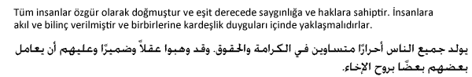
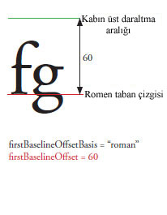
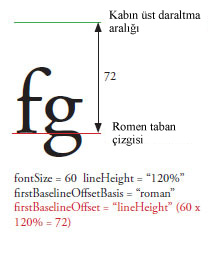

| Paket | fl.text |
| Sınıf | public class TLFTextField |
| Miras Alma | TLFTextField |
| Dil Sürümü: | ActionScript 3.0 |
| Ürün Sürümü: | Flash CS5 |
| Çalışma Zamanı Sürümleri: | Flash Player 10, AIR 1.5 |
TextField sınıfıyla bir metin alanı oluşturduğunuz şekilde bir TLFTextField nesnesi oluşturun. Sonra, TLF sınıflarından gelişmiş biçimlendirme atamak için textFlow özelliğini kullanın. Örneğin:
import fl.text.TLFTextField; import flashx.textLayout.formats.TextLayoutFormat; import flashx.textLayout.elements.TextFlow; var myTLFTextField:TLFTextField = new TLFTextField(); addChild(myTLFTextField); myTLFTextField.x = 10; myTLFTextField.y = 10; myTLFTextField.width = 200 myTLFTextField.height = 100; myTLFTextField.text = "This is my text"; var myFormat:TextLayoutFormat = new TextLayoutFormat(); myFormat.textIndent = 8; myFormat.color = 0x336633; myFormat.fontFamily = "Arial, Helvetica, _sans"; myFormat.fontSize = 24; var myTextFlow:TextFlow = myTLFTextField.textFlow; myTextFlow.hostFormat = myFormat; myTextFlow.flowComposer.updateAllControllers();
İlgili API Öğeleri
 Miras Alınan Genel Özellikleri Gizle
Miras Alınan Genel Özellikleri Gizle Miras Alınan Genel Özellikleri Göster
Miras Alınan Genel Özellikleri Göster| Özellik | Tanımlayan: | ||
|---|---|---|---|
 | accessibilityImplementation : AccessibilityImplementation
Bu InteractiveObject örneği için geçerli erişilebilirlik uygulaması (AccessibilityImplementation). | InteractiveObject | |
| accessibilityProperties : AccessibilityProperties
Bu görüntüleme nesnesi için geçerli erişilebilirlik seçenekleri. | DisplayObject | |
| alpha : Number
Belirtilen nesnenin alfa saydamlık değerini gösterir. | DisplayObject | |
| alwaysShowSelection : Boolean
true olarak ayarlandığında ve metin alanı odakta olmadığında, Flash Player metin alanındaki seçimi açık mavi renkte vurgular. | TLFTextField | ||
| antiAliasType : String
Bu metin alanı için kullanılan yumuşatma türü. | TLFTextField | ||
| autoSize : String
Metin alanlarının otomatik boyutlandırılmasını veya hizalanmasını kontrol eder. | TLFTextField | ||
| background : Boolean
Metin alanının arka plan dolgusu olup olmadığını belirtir. | TLFTextField | ||
| backgroundAlpha : Number
Metin alanı arka planının alfa değerini belirtir. | TLFTextField | ||
| backgroundColor : uint
Metin alanı arka planının rengini belirtir. | TLFTextField | ||
| blendMode : String
Hangi karışım modunun kullanılacağını belirten bir BlendMode sınıfı değeri. | DisplayObject | |
| blendShader : Shader [salt yazılır]
Ön planı ve arka planı karıştırmak için kullanılacak bir gölgelendirici ayarlar. | DisplayObject | |
| blockProgression : Object
Çizgi yerleşiminin dikey veya yatay ilerlemesini belirtir. | TLFTextField | ||
| border : Boolean
Metin alanının kenarlığı olup olmadığını belirtir. | TLFTextField | ||
| borderAlpha : Number
Kenarlığın alfa değerini belirtir. | TLFTextField | ||
| borderColor : uint
Metin alanı kenarlığının rengini belirtir. | TLFTextField | ||
| borderWidth : Number
Kenarlık genişliğini belirtir. | TLFTextField | ||
| bottomScrollV : int [salt okunur]
Belirtilen metin alanında halen görünür durumda olan en alt satırı gösteren bir tam sayı (1 temelli dizin). | TLFTextField | ||
| buttonMode : Boolean
Bu hareketli grafiğin düğme modunu belirtir. | Sprite | |
| cacheAsBitmap : Boolean
true olarak ayarlanırsa, Flash çalışma zamanları, görüntüleme nesnesinin dahili bir bitmap temsilini önbelleğe alır. | DisplayObject | |
| cacheAsBitmapMatrix : Matrix
Bu Matrix nesnesi null olmazsa, görüntüleme nesnesinin cacheAsBitmap true olarak ayarlandığı zaman nasıl oluşturacağını tanımlar. | DisplayObject | |
| caretIndex : int [salt okunur]
Ekleme noktası (düzeltme) konumunun dizini. | TLFTextField | ||
| columnCount : Object
Metin sütunlarının sayısı (basamaklama sırasında tanımsızsa varsayılan değeri benimser). | TLFTextField | ||
| columnGap : Object
Sütunlar arasında bırakılacak boşluk miktarını piksel cinsinden belirtir (basamaklama sırasında tanımsızsa varsayılan değeri benimser). | TLFTextField | ||
| columnWidth : Object
Piksel cinsinden sütun genişliği (basamaklama sırasında tanımsızsa varsayılan değeri benimser). | TLFTextField | ||
| condenseWhite : Boolean
İçinde HTML metni veya TLF işaretleme bulunan bir metin alanından ekstra beyaz boşlukların (boşluk, satır kesmeler vb.) kaldırılıp kaldırılmayacağını gösteren bir Boolean değeri. | TLFTextField | ||
| constructor : Object
Belirli bir nesne örneği için sınıf nesnesine veya yapıcı işlevine bir başvuru. | Object | |
| contextMenu : NativeMenu
Bu nesneyle ilişkilendirilen bağlam menüsünü belirtir. | InteractiveObject | |
| defaultTextFormat : flash.text:TextFormat
Kullanıcı tarafından girilen metin veya replaceSelectedText() yöntemiyle eklenen metin gibi, yeni eklenen metine uygulanan biçimi belirtir. | TLFTextField | ||
| direction : String
Metin bloğundaki varsayılan iki yönlü gömme düzeyini belirtir. | TLFTextField | ||
| displayAsPassword : Boolean
Metin alanının bir şifre metin alanı olup olmadığını belirtir. | TLFTextField | ||
| doubleClickEnabled : Boolean
Nesnenin doubleClick olaylarını alıp almadığını belirtir. | InteractiveObject | |
| dropTarget : DisplayObject [salt okunur]
Hareketli grafiğin üzerine sürüklenmekte olduğu veya hareketli grafiğin üzerine bırakıldığı görüntüleme nesnesini belirtir. | Sprite | |
| embedFonts : Boolean
Gömülü font anahatları kullanılarak oluşturulup oluşturulmayacağını belirtir. | TLFTextField | ||
| filters : Array
Geçerli olarak görüntüleme nesnesiyle ilişkilendirilmiş her filtre nesnesini içeren dizinli bir dizi. | DisplayObject | |
| firstBaselineOffset : Object
Kaptaki ilk satırın taban çizgisi konumunu belirtir. | TLFTextField | ||
| focusRect : Object
Bu nesnenin bir odak dikdörtgeni görüntüleyip görüntülemediğini belirtir. | InteractiveObject | |
| graphics : Graphics [salt okunur]
Vektör çizimi komutlarının gerçekleşebileceği, bu hareketli grafiğe ait Graphics nesnesini belirtir. | Sprite | |
| gridFitType : String
Bu metin alanı için kullanılan ızgara sığdırma türü. | TLFTextField | ||
| height : Number
Görüntüleme nesnesinin yüksekliğini, piksel cinsinden belirtir. | DisplayObject | |
| hitArea : Sprite
Bir hareketli grafik için tıklatma alanı olarak başka bir hareketli grafiği atar. | Sprite | |
| htmlText : String
Metin alanının içeriğinin HTML temsilini içerir. | TLFTextField | ||
| length : int [salt okunur]
Bir metin alanındaki karakter sayısı. | TLFTextField | ||
| loaderInfo : LoaderInfo [salt okunur]
Bu görüntüleme nesnesinin ait olduğu dosyayı yükleme hakkında bilgi içeren bir LoaderInfo nesnesi döndürür. | DisplayObject | |
| mask : DisplayObject
Çağıran görüntüleme nesnesi belirtilen mask nesnesiyle maskelenir. | DisplayObject | |
| maxChars : int
Metin alanının içerebileceği, kullanıcı tarafından girilen maksimum karakter sayısı. | TLFTextField | ||
| maxScrollH : int [salt okunur]
scrollH'nin maksimum değeri. | TLFTextField | ||
| maxScrollV : int [salt okunur]
scrollV'nin maksimum değer. | TLFTextField | ||
| metaData : Object
Meta veri SWF dosyasında PlaceObject4 aracılığıyla söz konusu DisplayObject örneğinin yanında depolanmışsa, DisplayObject örneğinin meta veri nesnesini alır. | DisplayObject | |
| mouseChildren : Boolean
Nesnenin alt öğelerinin, fare veya kullanıcı girdi aygıtı etkin olduğunu belirtir. | DisplayObjectContainer | |
| mouseEnabled : Boolean
Bu nesnenin fare veya diğer kullanıcı girdisi iletileri alıp almadığını belirtir. | InteractiveObject | |
| mouseWheelEnabled : Boolean
Flash Player'ın, kullanıcı bir metin alanını tıklatıp fare tekerleğini döndürdüğünde çok satırlı metin alanlarını otomatik olarak kaydırıp kaydırmayacağını gösteren Boolean değeri. | TLFTextField | ||
| mouseX : Number [salt okunur]
Farenin veya kullanıcı girdi aygıtı konumunun x koordinatını piksel olarak belirtir. | DisplayObject | |
| mouseY : Number [salt okunur]
Farenin veya kullanıcı girdi aygıtı konumunun y koordinatını piksel olarak belirtir. | DisplayObject | |
| multiline : Boolean
Metin alanının çok satırlı bir metin alanı olup olmadığını gösterir. | TLFTextField | ||
| name : String
DisplayObject öğesinin örnek adını belirtir. | DisplayObject | |
| needsSoftKeyboard : Boolean
Bu InteractiveObject örneği odak aldığında sanal bir klavyenin (ekrandaki yazılım klavyesi) görüntülenip görüntülenmemesi gerektiğini belirtir. | InteractiveObject | |
| numChildren : int [salt okunur]
Bu nesnenin alt öğelerinin sayısını döndürür. | DisplayObjectContainer | |
| numLines : int [salt okunur]
Çok satırlı bir metin alanındaki metin satır sayısını tanımlar. | TLFTextField | ||
| opaqueBackground : Object
Görüntüleme nesnesinin belirli bir arka plan rengiyle opak olup olmadığını belirtir. | DisplayObject | |
| paddingBottom : Object
Piksel cinsinden alt daraltma (basamaklama sırasında tanımsızsa varsayılan değeri benimser). | TLFTextField | ||
| paddingLeft : Object
Piksel cinsinden sol daraltma (basamaklama sırasında tanımsızsa varsayılan değeri benimser). | TLFTextField | ||
| paddingRight : Object
Piksel cinsinden sağ daraltma (basamaklama sırasında tanımsızsa varsayılan değeri benimser). | TLFTextField | ||
| paddingTop : Object
Piksel cinsinden üst daraltma (basamaklama sırasında tanımsızsa varsayılan değeri benimser). | TLFTextField | ||
| parent : DisplayObjectContainer [salt okunur]
Bu görüntüleme nesnesini içeren DisplayObjectContainer nesnesini belirtir. | DisplayObject | |
| pixelMaxScrollV : int [salt okunur]
Maksimum pixelScrollV değeri. | TLFTextField | ||
| pixelScrollV : int
Bir metin alanındaki metnin, satır tabanlı scrollV'nin aksine piksel cinsinden dikey konumu. | TLFTextField | ||
| restrict : String
Metin alanına kullanıcının girebileceği karakter setini gösterir. | TLFTextField | ||
| root : DisplayObject [salt okunur]
Yüklü bir SWF dosyasındaki bir görüntüleme nesnesi için root özelliği, görüntüleme listesi ağaç yapısının o SWF dosyası tarafından temsil edilen kısmındaki en üst görüntüleme nesnesidir. | DisplayObject | |
| rotation : Number
DisplayObject örneğinin başlangıç yönlendirmesinden itibaren döndürülmesini derece olarak belirtir. | DisplayObject | |
| rotationX : Number
DisplayObject örneğinin, 3B üst kabına göre başlangıç yönlendirmesinden itibaren x ekseninde döndürülmesini derece olarak belirtir. | DisplayObject | |
| rotationY : Number
DisplayObject örneğinin, 3B üst kabına göre başlangıç yönlendirmesinden itibaren y ekseninde döndürülmesini derece olarak belirtir. | DisplayObject | |
| rotationZ : Number
DisplayObject örneğinin, 3B üst kabına göre başlangıç yönlendirmesinden itibaren z ekseninde döndürülmesini derece olarak belirtir. | DisplayObject | |
| scale9Grid : Rectangle
Etkin durumdaki geçerli ölçekleme ızgarası. | DisplayObject | |
| scaleX : Number
Nesnenin, kayıt noktasından itibaren uygulandığı haliyle yatay ölçeğini (percentage) belirtir. | DisplayObject | |
| scaleY : Number
Nesnenin kayıt noktasından itibaren uygulandığı haliyle nesnenin dikey ölçeğini (percentage) belirtir. | DisplayObject | |
| scaleZ : Number
Nesnenin kayıt noktasından itibaren uygulandığı haliyle nesnenin derinlik ölçeğini (percentage) belirtir. | DisplayObject | |
| scrollH : int
Geçerli yatay kaydırma konumu. | TLFTextField | ||
| scrollRect : Rectangle
Görüntüleme nesnesinin kaydırma dikdörtgeni sınırları. | DisplayObject | |
| scrollV : int
Metnin metin alanındaki dikey konumu. | TLFTextField | ||
| selectable : Boolean
Metin alanının seçilebilir olup olmadığını gösteren Boolean değeri. | TLFTextField | ||
| selectionBeginIndex : int [salt okunur]
Geçerli seçimdeki ilk karakterin sıfır temelli karakter dizin değeri. | TLFTextField | ||
| selectionEndIndex : int [salt okunur]
Geçerli seçimdeki ilk karakterin sıfır temelli karakter dizin değeri. | TLFTextField | ||
| sharpness : Number
Keskinlik TLF TextField öğelerine uygulanamaz. | TLFTextField | ||
| softKeyboard : String
Yazılım klavyesinin görünümünü kontrol eder. | InteractiveObject | |
| softKeyboardInputAreaOfInterest : Rectangle
Yazılım klavyesi görüntülendiğinde ekranda kalması gereken alanı belirtir (iOS'ta kullanılabilir değildir) | InteractiveObject | |
| soundTransform : flash.media:SoundTransform
Bu hareketli grafikteki sesi denetler. | Sprite | |
| stage : Stage [salt okunur]
Görüntüleme nesnesinin Sahne Alanı. | DisplayObject | |
| styleSheet : StyleSheet
TLF TextField için stil sayfası. | TLFTextField | ||
| tabChildren : Boolean
Nesnenin alt öğelerinin sekme tuşuna tepki verip vermediğini belirler. | DisplayObjectContainer | |
| tabEnabled : Boolean
Bu nesnenin sekme sırasında olup olmadığını belirtir. | InteractiveObject | |
| tabIndex : int
SWF dosyasındaki nesnelerin sekme sıralamasını belirtir. | InteractiveObject | |
| text : String
Metin alanındaki geçerli metin olan dize. | TLFTextField | ||
| textColor : uint
Metin alanındaki metnin onaltılık biçimde rengi. | TLFTextField | ||
| textFlow : flashx.textLayout.elements:TextFlow
Flashx paketlerindeki TLF sınıflarından TLFTextField örneğine biçimlendirme atamak için bu özelliği kullanın. | TLFTextField | ||
| textHeight : Number [salt okunur]
Metnin piksel olarak yüksekliği. | TLFTextField | ||
| textSnapshot : flash.text:TextSnapshot [salt okunur]
Bu DisplayObjectContainer örneği için bir TextSnapshot nesnesi döndürür. | DisplayObjectContainer | |
| textWidth : Number [salt okunur]
Metnin piksel olarak genişliği. | TLFTextField | ||
| thickness : Number
thickness özelliği TLF TextField için uygulanamaz. | TLFTextField | ||
| tlfMarkup : String
TLF metin alanındaki metnin TLF işaretlemesini ayarlar veya alır. | TLFTextField | ||
| transform : flash.geom:Transform
Bir görüntüleme nesnesinin matrisi, renk dönüşümü ve piksel sınırları ile ilgili özellikleri olan bir nesne. | DisplayObject | |
| type : String
Metin alanının türü. | TLFTextField | ||
| useHandCursor : Boolean
İşaret eden elin (el imleci), buttonMode özelliği true değerine ayarlanmış bir hareketli grafiğin üzerinde işaretçi gezinirken görüntülenip görüntülenmeyeceğini belirten Boolean değeri. | Sprite | |
| useRichTextClipboard : Boolean
Metin biçimlendirmesinin panoya metin ile beraber kopyalanıp kopyalanmayacağını belirler. | TLFTextField | ||
| verticalAlign : String
Dikey hizalama veya yaslama (basamaklama sırasında tanımsızsa varsayılan değeri benimser). | TLFTextField | ||
| visible : Boolean
Görüntüleme nesnesinin görünür olup olmadığı. | DisplayObject | |
| width : Number
Görüntüleme nesnesinin genişliğini, piksel cinsinden belirtir. | DisplayObject | |
| wordWrap : Boolean
Metin alanında kelime kaydırma olup olmadığını gösteren Boolean değeri. | TLFTextField | ||
| x : Number
DisplayObject örneğinin DisplayObjectContainer üst öğesinin yerel koordinatlarına göre x koordinatını belirtir. | DisplayObject | |
| y : Number
DisplayObject örneğinin DisplayObjectContainer üst öğesinin yerel koordinatlarına göre y koordinatını belirtir. | DisplayObject | |
| z : Number
3B üst kabına göre DisplayObject örneğinin z ekseni boyunca z koordinatı konumunu belirtir. | DisplayObject | |
| Yöntem | Tanımlayan: | ||
|---|---|---|---|
TLFTextField nesnelerinin yapıcısı. | TLFTextField | ||
|
Bu DisplayObjectContainer örneğine bir alt DisplayObject örneği ekler. | DisplayObjectContainer | |
|
Bu DisplayObjectContainer örneğine bir alt DisplayObject örneği ekler. | DisplayObjectContainer | |
| addEventListener(type:String, listener:Function, useCapture:Boolean = false, priority:int = 0, useWeakReference:Boolean = false):void
EventDispatcher nesnesi olan bir olay dinleyici nesnesini, dinleyicinin bir olayın bildirimini alması için kaydeder. | EventDispatcher | |
newText parametresi tarafından belirtilen dizeyi metin alanındaki metnin sonuna ekler. | TLFTextField | ||
|
Güvenlik kısıtlamalarının, DisplayObjectContainer.getObjectsUnderPoint() yönteminin belirtilen point noktası ile çağrılması sonucunda döndürülen listeden görüntüleme nesnelerinin çıkarılmasına neden olup olmayacağını belirtir. | DisplayObjectContainer | |
|
Belirtilen görüntüleme nesnesinin, DisplayObjectContainer örneğinin alt öğesi mi, yoksa örneğin kendisi mi olduğunu belirler. | DisplayObjectContainer | |
|
Olay akışına bir olay gönderir. | EventDispatcher | |
|
Görüntüleme nesnesinin alanını targetCoordinateSpace nesnesinin koordinat sistemine göre tanımlayan bir dikdörtgen döndürür. | DisplayObject | |
Karakterin sınırlama kutusu olan bir dikdörtgen döndürür. | TLFTextField | ||
x ve y parametreleri tarafından belirtilen noktadaki karakterin sıfır temelli dizin değerini döndürür. | TLFTextField | ||
|
Belirtilen dizinde bulunan alt görüntüleme nesnesi örneğini döndürür. | DisplayObjectContainer | |
|
Belirtilen ad ile var olan alt görüntüleme nesnesini döndürür. | DisplayObjectContainer | |
|
Bir alt DisplayObject örneğinin dizin konumunu döndürür. | DisplayObjectContainer | |
Bir karakter dizini belirtilirse, aynı paragraftaki ilk karakterin dizinini döndürür. | TLFTextField | ||
<img> etiketini kullanarak, belirli bir kimlik, HTML biçimli metin alanına eklenmiş bir görüntü veya SWF dosyası için bir DisplayObject başvurusu döndürür. | TLFTextField | ||
x ve y parametreleri tarafından belirtilen noktadaki satırın sıfır temelli dizin değerini döndürür. | TLFTextField | ||
charIndex parametresinin belirttiği karakteri içeren satırın sıfır temelli dizin değerini döndürür. | TLFTextField | ||
Belirli bir metin satırındaki karakter sayısını döndürür. | TLFTextField | ||
Belirli bir metin satırı hakkındaki ölçüm bilgilerini döndürür. | TLFTextField | ||
lineIndex parametresinin belirttiği satırdaki ilk karakterin karakter dizinini döndürür. | TLFTextField | ||
Satırın lineIndex parametresi tarafından belirtilen metnini döndürür. | TLFTextField | ||
|
Belirtilen noktanın altında olan ve bu DisplayObjectContainer örneğinin alt öğesi (veya alt alt öğesi vb.) olan nesnelerin bir dizisini döndürür. | DisplayObjectContainer | |
Bir karakter dizini belirtilirse, belirtilen karakteri içeren paragraf uzunluğu döndürülür. | TLFTextField | ||
|
targetCoordinateSpace parametresince tanımlanan koordinat sistemini esas alarak ve her tür çizgi ve şekli dışarıda bırakarak görüntüleme nesnesinin sınırlarını tanımlayan bir dikdörtgen döndürür. | DisplayObject | |
beginIndex ve endIndex parametrelerinin belirttiği metin aralığına yönelik biçimlendirme bilgileri içeren bir TextFormat nesnesi döndürür. | TLFTextField | ||
|
point nesnesini, Sahne Alanı (global) koordinatlarından görüntüleme nesnesinin (yerel) koordinatlarına dönüştürür. | DisplayObject | |
|
Sahne Alanı (global) koordinatlarından iki boyutlu noktayı üç boyutlu görüntüleme nesnesinin (yerel) koordinatlarına dönüştürür. | DisplayObject | |
|
EventDispatcher nesnesinin belirli bir olay türü için kayıtlı dinleyicisi olup olmadığını kontrol eder. | EventDispatcher | |
|
Bir nesnenin belirli bir özelliğinin tanımlı olup olmadığını gösterir. | Object | |
|
obj görüntüleme nesnesinin sınırlayıcı kutusuyla örtüşüp örtüşmediğini veya kesişip kesişmediğini görmek için görüntüleme nesnesinin sınırlayıcı kutusunu değerlendirir. | DisplayObject | |
|
Görüntüleme nesnesinin x ve y parametreleriyle belirtilen noktayla örtüştüğünü veya kesiştiğini görmek için görüntüleme nesnesini değerlendirir. | DisplayObject | |
Bir gömülü font, Font.fontType öğesinin flash.text.FontType.EMBEDDED_CFF olduğu belirli fontName ve fontStyle ile mevcutsa true değerini döndürür. | TLFTextField | ||
|
Object sınıfının bir örneğinin parametre olarak belirtilen nesnenin prototip zincirinde olup olmadığını gösterir. | Object | |
|
Üç boyutlu görüntüleme nesnesinin (yerel) koordinatlarının üç boyutlu noktasını, Sahne Alanı (global) koordinatlarındaki iki boyutlu noktaya dönüştürür. | DisplayObject | |
|
point nesnesini, görüntüleme nesnesinin (yerel) koordinatlarından Sahne Alanı (global) koordinatlarına dönüştürür. | DisplayObject | |
|
Belirtilen özelliğin bulunup bulunmadığını ve numaralandırılabilir olup olmadığını gösterir. | Object | |
|
Belirtilen alt DisplayObject örneğini DisplayObjectContainer örneğinin alt öğe listesinden kaldırır. | DisplayObjectContainer | |
|
DisplayObjectContainer nesnesinin alt öğe listesinde belirtilen dizin konumundan bir alt DisplayObject öğesini kaldırır. | DisplayObjectContainer | |
|
Tüm alt DisplayObject örneklerini DisplayObjectContainer örneğinin alt öğe listesinden kaldırır. | DisplayObjectContainer | |
|
EventDispatcher nesnesinden bir dinleyiciyi kaldırır. | EventDispatcher | |
Geçerli seçimi, değer parametresinin içeriği ile değiştirir. | TLFTextField | ||
beginIndex ve endIndex parametrelerinin newText parametresinin içeriğini belirttiği karakter aralığını değiştirir. | TLFTextField | ||
|
Sanal bir klavye yükseltir. | InteractiveObject | |
|
Mevcut bir alt öğenin görüntüleme nesnesi kabındaki konumunu değiştirir. | DisplayObjectContainer | |
|
Dinamik bir özelliğin döngü işlemlerinde kullanılabilirliğini ayarlar. | Object | |
beginIndex ve endIndex parametreleriyle belirlenen ilk ve son karakterin diziniyle saptanan metni seçilmiş olarak ayarlar. | TLFTextField | ||
format parametresinin belirttiği metin biçimlendirmesini bir metin alanında belirtilen metne uygular. | TLFTextField | ||
|
Kullanıcının belirtilen hareketli grafiği sürüklemesini sağlar. | Sprite | |
|
Kullanıcının dokunmatik etkin bir aygıtta belirli hareketli grafiği sürüklemesine izin verir. | Sprite | |
|
Kökü bu nesnede bulunan tüm MovieClip öğelerinin zaman çizelgesinde yürütülmesini özyinelemeli olarak durdurur. | DisplayObjectContainer | |
|
startDrag() yöntemini bitirir. | Sprite | |
|
Dokunma etkin aygıtlarla kullanım için startTouchDrag() yöntemini sonlandırır. | Sprite | |
|
Belirtilen iki alt nesnenin z sırasını (önden arkaya sıra) takas eder. | DisplayObjectContainer | |
|
Alt öğe listesinde belirtilen iki dizin konumundaki alt öğe nesnelerinin z sırasını (önden arkaya sıra) takas eder. | DisplayObjectContainer | |
|
Bu nesnenin, yerel ayara özel kurallara göre biçimlendirilmiş dize temsilini döndürür. | Object | |
|
Belirtilen nesnenin dize olarak temsil edilen halini döndürür. | Object | |
|
Belirtilen nesnenin temel değerini döndürür. | Object | |
|
Bir olay dinleyicisinin bu EventDispatcher nesnesiyle mi, yoksa onun belirtilen olay türüne yönelik üst öğelerinden biriyle mi kayıtlı olduğunu kontrol eder. | EventDispatcher | |
| Olay | Özet | Tanımlayan: | ||
|---|---|---|---|---|
| [broadcast olayı] Flash Player veya AIR uygulaması işletim sistemi odağına gelip etkin olduğunda gönderilir. | EventDispatcher | ||
| Görüntüleme listesine bir görüntüleme nesnesi eklendiğinde gönderilir. | DisplayObject | ||
| Doğrudan veya görüntüleme nesnesini içeren alt ağacın eklenmesiyle, sahne alanı görüntüleme listesine bir görüntüleme nesnesi eklenmek üzereyken gönderilir. | DisplayObject | ||
| Bir denetim değeri değiştirilmeden önce gönderilen textInput olayının aksine, değer değiştirildikten sonra gönderilir. | TLFTextField | |||
| Kullanıcı, metin bağlam menüsünden 'Temizle' (veya 'Sil') seçeneğini belirlediğinde gönderilir. | InteractiveObject | ||
| Kullanıcı aynı InteractiveObject üzerindeyken işaretleme aygıtının ana düğmesine basıp bıraktığında gönderilir. | InteractiveObject | ||
| Kullanıcı hareketi, AIR uygulamasında bulunan bu etkileşimli nesneyle ilişkilendirilmiş bağlam menüsünü tetiklediğinde gönderilir. | InteractiveObject | ||
| Kullanıcı, kopyalama işlemi için platforma özel hızlandırıcı tuş kombinasyonunu etkinleştirdiğinde veya metin bağlam menüsünden 'Kopyala' seçeneğini belirlediğinde gönderilir. | InteractiveObject | ||
| Kullanıcı, kesme işlemi için platforma özel hızlandırıcı tuş kombinasyonunu etkinleştirdiğinde veya metin bağlam menüsünden 'Kes' seçeneğini belirlediğinde gönderilir. | InteractiveObject | ||
| [broadcast olayı] Çalışan Flash Player veya AIR uygulaması sistem odağını kaybettiğinde ve etkin olmayan duruma geldiğinde gönderilir. | EventDispatcher | ||
| Bir InteractiveObject nesnesinin doubleClickEnabled bayrağı true olarak ayarlanmışsa, kullanıcı işaretleme aygıtının ana düğmesini aynı InteractiveObject üzerindeyken çok kısa süre içinde art arda iki kez basıp bıraktığında gönderilir. | InteractiveObject | ||
| [broadcast olayı] Oynatma kafası yeni bir kareye girerken gönderilir. | DisplayObject | ||
| [broadcast olayı] Oynatma kafası geçerli kareden çıkarken gönderilir. | DisplayObject | ||
| Bir görüntüleme nesnesi odağı aldıktan sonra gönderilir. | InteractiveObject | ||
| Bir ekran nesnesi odaktan çıktıktan sonra gönderilir. | InteractiveObject | ||
| [broadcast olayı] Kare görüntüleme nesnelerinin yapıcıları çalıştırıldıktan sonra ancak kare komut dosyaları çalıştırılmadan önce gönderilir. | DisplayObject | ||
| Kullanıcı bir InteractiveObject örneği ile dokunmatik yüzeyin kenarı boyunca temas noktası oluşturduğunda (örneğin Apple TV için Siri Remote dokunmatik yüzeyinin kenarına dokunarak) gönderilir. Bazı aygıtlar bu teması birden fazla dokunma olayının birleşimi olarak da yorumlayabilir. | InteractiveObject | ||
| Kullanıcı, dokunma etkin bir aygıtta aynı InteractiveObject örneği üzerinde iki temas noktasına bastığında gönderilir (örn. dokunmatik ekranı olan bir cep telefonunda veya tablette bir görüntüleme nesnesinin üzerine iki parmakla basıp parmakları serbest bırakma). | InteractiveObject | ||
| Kullanıcı dokunmatik etkin bir aygıtta InteractiveObject örneğinin üzerindeyken bir temas noktası hareket ettirdiğinde gönderilir (örn. dokunmatik ekranı olan bir cep telefonu veya tablette görüntüleme nesnesi üzerinde bir parmağı soldan sağa hareket ettirme). | InteractiveObject | ||
| Kullanıcı InteractiveObject örneği ile bir temas noktasında döndürme hareketi uyguladığında gönderilir (örn. dokunmatik ekranı olan bir cep telefonunda veya tablette ekrana iki parmakla dokunup parmakları döndürme). | InteractiveObject | ||
| Kullanıcı InteractiveObject örneği ile bir temas noktasında kaydırma hareketi uyguladığında gönderilir (örn. dokunmatik ekranı olan bir cep telefonunda veya tablette ekrana üç parmakla dokunup ardından onları paralel bir şekilde görüntüleme nesnesi üzerinden hareket ettirmek). | InteractiveObject | ||
| Kullanıcı bir InteractiveObject örneği ile temas noktası oluşturup sonra dokunma etkin aygıta dokunduğunda gönderilir (örn. dokunmatik ekranı olan bir cep telefonunda veya tablette bir menüyü açmak için ekran nesnesinin üzerine birkaç parmağını koyup sonra da menü öğesini seçmek için bir parmağınla dokunma). | InteractiveObject | ||
| Kullanıcı InteractiveObject örneği ile bir temas noktasında yakınlaştırma hareketi uyguladığında gönderilir (örn. dokunmatik ekranı olan bir cep telefonunda veya tablette ekrana iki parmakla dokunup ardından görüntüleme nesnesinden parmakları çabucak yanlara açma). | InteractiveObject | ||
| Bu olay, IME ile satır içi girdiyi destekleyen herhangi bir istemciye gönderilir. | InteractiveObject | ||
| Kullanıcı bir tuşa bastığında gönderilir. | InteractiveObject | ||
| Kullanıcı klavye aracılığıyla gezinerek odağı değiştirme girişiminde bulunduğunda gönderilir. | InteractiveObject | ||
| Kullanıcı bir tuşu bıraktığında gönderilir. | InteractiveObject | ||
| Kullanıcı, URL'nin "event:" ile başladığı, HTML özelliği etkinleştirilmiş bir metin alanındaki bir köprüyü tıklattığında gönderilir. | TLFTextField | |||
| Kullanıcı, aynı InteractiveObject üzerinde kullanıcının işaretleme aygıtının orta düğmesine basıp düğmeyi bıraktığında gönderilir. | InteractiveObject | ||
| Kullanıcı InteractiveObject örneğinin üzerinde işaretleme aygıtının orta düğmesine bastığında görüntülenir. | InteractiveObject | ||
| Kullanıcı işaretleme aygıtı düğmesini InteractiveObject örneğinin üzerinde bıraktığında gönderilir. | InteractiveObject | ||
| Kullanıcı InteractiveObject örneğinin üzerinde işaretleme aygıtı düğmesine bastığında gönderilir. | InteractiveObject | ||
| Kullanıcı bir işaretleme aygıtı kullanarak odağı değiştirme girişiminde bulunduğunda gönderilir. | InteractiveObject | ||
| Kullanıcı, işaretleme aracını, bir InteractiveObject üzerindeyken hareket ettirdiğinde gönderilir. | InteractiveObject | ||
| Kullanıcı, işaretleme aygıtını bir InteractiveObject üzerinden dışarı taşıdığında gönderilir. | InteractiveObject | ||
| Kullanıcı, işaretleme aygıtını, bir InteractiveObject üzerinde hareket ettirdiğinde gönderilir. | InteractiveObject | ||
| Kullanıcı işaretleme aygıtı düğmesini InteractiveObject örneğinin üzerinde bıraktığında gönderilir. | InteractiveObject | ||
| Fare tekerleği bir InteractiveObject örneği üzerinde döndüğünde gönderilir. | InteractiveObject | ||
| Kullanıcı sürükleme hareketini bıraktığında sürükleme başlatıcı InteractiveObject tarafından gönderilir. | InteractiveObject | ||
| Hedef InteractiveObject tarafından, sürüklenen bir nesne üzerine bırakıldığında ve bırakma DragManager.acceptDragDrop() öğesine yapılan bir çağrıyla kabul edildiğinde gönderilir. | InteractiveObject | ||
| Sürükleme hareketi sınırının içine girdiğinde, InteractiveObject tarafından gönderilir. | InteractiveObject | ||
| Bir sürükleme hareketi sınırının dışına çıktığında, InteractiveObject tarafından gönderilir. | InteractiveObject | ||
| Sürükleme hareketi sınırının içinde kalırken sürekli olarak InteractiveObject tarafından gönderilir. | InteractiveObject | ||
| Sürükleme işleminin başlangıcında, DragManager.doDrag() çağrısında sürükleme başlatıcı olarak belirlenen InteractiveObject tarafından gönderilir. | InteractiveObject | ||
| Bir sürükleme işlemi sırasında, DragManager.doDrag() çağrısında sürükleme başlatıcı olarak belirlenen InteractiveObject tarafından gönderilir. | InteractiveObject | ||
| Kullanıcı, yapıştırma işlemi için platforma özel hızlandırıcı tuş kombinasyonunu etkinleştirdiğinde veya metin bağlam menüsünden 'Yapıştır' seçeneğini belirlediğinde gönderilir. | InteractiveObject | ||
| Kullanıcı, etkin bir stilusu ekranın yakınlık algılaması eşiğinin altına indirirse gönderilir. | InteractiveObject | ||
| Kullanıcı, etkin bir stilusu ekranın yakınlık algılaması eşiğinin üzerinde olacak şekilde kaldırdığında gönderilir. | InteractiveObject | ||
| Kullanıcı, yakınlık algılaması eşiğinde kalırken, ekranın üzerine etkin bir stilus taşıdığında gönderilir. | InteractiveObject | ||
| Kullanıcı, ekranın yakınlık algılama eşiğinde kalırken bu InteractiveObject öğesinden etkin bir stilusu uzaklaştırdığında gönderilir. | InteractiveObject | ||
| Kullanıcı, ekranın yakınlık algılama eşiğinde kalırken, bu InteractiveObject öğesinin üzerine doğrudan etkin bir stilus taşıdığında gönderilir. | InteractiveObject | ||
| Kullanıcı, ekranın yakınlık algılama eşiğinde kalırken, InteractiveObject öğesi ve onun alt öğelerinin herhangi birinden etkin bir stilusu uzaklaştırdığında gönderilir. | InteractiveObject | ||
| Kullanıcı; görüntüleme listesindeki öğelerin nesne ağacının dışında kalan (ekranın yakınlık algılama eşiğindeyken) bu InteractiveObject üzerine etkin bir stilus taşırsa gönderilir. | InteractiveObject | ||
| Kullanıcı düğmeye önce bir InteractiveObject örneği üzerinde bastıktan ve ardından işaretleme aygıtını InteractiveObject örneğinin üzerinden çektikten sonra, kullanıcı işaretleme aygıtı düğmesini bıraktığı zaman gönderilir. | InteractiveObject | ||
| Görüntüleme listesinden bir ekran nesnesi kaldırılmak üzereyken gönderilir. | DisplayObject | ||
| Ya doğrudan ya da ekran nesnesini içeren alt ağacın kaldırılmasıyla, sahne görüntüleme listesinden bir ekran nesnesi kaldırılmak üzereyken gönderilir. | DisplayObject | ||
| [broadcast olayı] Ekran güncellenmek ve oluşturulmak üzereyken gönderilir. | DisplayObject | ||
| Kullanıcı, aynı InteractiveObject üzerinde kullanıcının işaretleme aygıtının sağ düğmesine basıp düğmeyi bıraktığında gönderilir. | InteractiveObject | ||
| Kullanıcı InteractiveObject örneğinin üzerinde işaretleme aygıtı düğmesine bastığında gönderilir. | InteractiveObject | ||
| Kullanıcı işaretleme aygıtı düğmesini InteractiveObject örneğinin üzerinde bıraktığında gönderilir. | InteractiveObject | ||
| Kullanıcı, işaretleme aygıtını bir InteractiveObject üzerinden dışarı taşıdığında gönderilir. | InteractiveObject | ||
| Kullanıcı, işaretleme aracını, bir InteractiveObject üzerinde hareket ettirdiğinde gönderilir. | InteractiveObject | ||
| Kullanıcı kaydırma yaptıktan sonra bir TextField nesnesi tarafından gönderilir. | TLFTextField | |||
| Kullanıcı, tümünü seçme işlemi için platforma özel hızlandırıcı tuş kombinasyonunu etkinleştirdiğinde veya metin bağlam menüsünden 'Tümünü Seç' seçeneğini belirlediğinde gönderilir. | InteractiveObject | ||
| Sanal klavye yükseltildikten hemen sonra gönderilir. | InteractiveObject | ||
| Sanal klavye yükseltildikten hemen önce gönderilir. | InteractiveObject | ||
| Sanal klavye indirildikten hemen sonra gönderilir. | InteractiveObject | ||
| Nesnenin tabChildren bayrağının değeri değiştiğinde gönderilir. | InteractiveObject | ||
| Nesnenin tabEnabled bayrağı değiştiğinde gönderilir. | InteractiveObject | ||
| Nesnenin tabIndex özelliğinin değeri değiştiğinde gönderilir. | InteractiveObject | ||
| Kullanıcı bir veya birden çok metin karakteri girdiğinde Flash Player, textInput olayını gönderir. | TLFTextField | |||
| Kullanıcı, dokunmatik etkin bir aygıta ilk temas ettiğinde gönderilir (örn. dokunmatik ekranı olan bir cep telefonu veya tablete parmakla dokunma). | InteractiveObject | ||
| Kullanıcı, dokunmatik etkin bir aygıt ile teması kaldırdığında gönderilir (örn. dokunmatik ekranı olan bir cep telefonu veya tablette parmağı kaldırma). | InteractiveObject | ||
| Kullanıcı aygıta dokunduğunda gönderilir ve temas noktası kaldırılana kadar sürekli olarak gönderilir. | InteractiveObject | ||
| Kullanıcı dokunmatik etkin bir aygıtta temas noktasını InteractiveObject örneğinden dışarı doğru hareket ettirdiğinde gönderilir (örn. dokunmatik ekranı olan bir cep telefonu veya tablette bir parmağını bir görüntüleme nesnesinden diğerine sürükleme). | InteractiveObject | ||
| Kullanıcı dokunmatik etkin bir aygıtta InteractiveObject örneğinin üzerinde temas noktasını hareket ettirdiğinde gönderilir (örn. dokunmatik ekranı olan bir cep telefonu veya tablette bir parmağını görüntüleme nesnesinin dışındaki bir noktadan, görüntüleme nesnesinin üzerindeki bir noktaya sürükleme). | InteractiveObject | ||
| Kullanıcı temas noktasını dokunmatik bir aygıtta bir InteractiveObject örneğinden uzağa hareket ettirdiğinde gönderilir (bir cep telefonunda veya dokunmatik ekranlı bir tablet bilgisayarda ekran nesnesinden ekran nesnesinin dışına parmağını sürüklemesi gibi). | InteractiveObject | ||
| Kullanıcı dokunmatik etkin bir aygıtta InteractiveObject örneğinin üzerinde temas noktasını hareket ettirdiğinde gönderilir (örn. dokunmatik ekranı olan bir cep telefonu veya tablette bir parmağını görüntüleme nesnesinin dışındaki bir noktadan, görüntüleme nesnesinin üzerindeki bir noktaya sürükleme). | InteractiveObject | ||
| Kullanıcı, dokunmatik etkin bir aygıtta temasın başlatıldığı aynı InteractiveObject örneği üzerinde temas noktasını kaldırdığında gönderilir (örn. dokunmatik ekranı olan bir cep telefonu veya tablette görüntüleme nesnesi üzerindeki tek bir noktaya bir parmakla basıp parmağı serbest bırakma). | InteractiveObject | ||
alwaysShowSelection | özellik |
alwaysShowSelection:Boolean| Dil Sürümü: | ActionScript 3.0 |
| Çalışma Zamanı Sürümleri: | Flash Player 10, AIR 1.5 |
true olarak ayarlandığında ve metin alanı odakta olmadığında, Flash Player metin alanındaki seçimi açık mavi renkte vurgular. false olarak ayarlandığında ve metin alanı odakta olmadığında, Flash Player metin alanındaki seçimi vurgulamaz.
Örnek:
package
{
import flash.display.Sprite;
import fl.text.TLFTextField;
import flash.text.TextFieldType;
public class TLFTextField_alwaysShowSelection extends Sprite
{
public function TLFTextField_alwaysShowSelection()
{
var label1:TLFTextField = createTLFTextField(0, 20, 200, 20);
label1.text = "This text is selected.";
label1.setSelection(0, 9);
label1.alwaysShowSelection = true;
var label2:TLFTextField = createTLFTextField(0, 50, 200, 20);
label2.text = "Drag to select some of this text.";
}
private function createTLFTextField(x:Number, y:Number, width:Number, height:Number):TLFTextField
{
var result:TLFTextField = new TLFTextField();
result.x = x;
result.y = y;
result.width = width;
result.height = height;
addChild(result);
return result;
}
}
}
Varsayılan değer şudur false.
Uygulama
public function get alwaysShowSelection():Boolean public function set alwaysShowSelection(value:Boolean):voidİlgili API Öğeleri
antiAliasType | özellik |
antiAliasType:String| Dil Sürümü: | ActionScript 3.0 |
| Çalışma Zamanı Sürümleri: | Flash Player 10, AIR 1.5 |
Bu metin alanı için kullanılan yumuşatma türü. Bu özellik için flash.text.AntiAliasType sabitlerini kullanın. Bu ayarı yalnızca fontun gömülü olması (embedFonts özelliği true olarak ayarlanmış şekilde) durumunda denetleyebilirsiniz.
Bu özelliğin değerlerini ayarlamak için, aşağıdaki dize değerlerini kullanın:
| Dize değeri | Açıklama |
|---|---|
flash.text.AntiAliasType.NORMAL | Normal metin yumuşatmasını uygular. Bu, Flash Player 7 ve önceki sürümlerin kullandığı yumuşatma türüyle eşleşir. |
flash.text.AntiAliasType.ADVANCED | Metni daha okunabilir kılan gelişmiş yumuşatma uygular. (Bu özellik Flash Player 8'de kullanılmaya başladı.) Gelişmiş yumuşatma, boyutu küçük font yüzlerinin yüksek kalitede oluşturulmasını sağlar. En iyi şekilde, çok sayıda küçük metne sahip olan uygulamalarla kullanılabilir. 48 noktadan büyük fontlar için gelişmiş yumuşatma önerilmez. |
Varsayılan değer şudur flash.text.AntiAliasType.NORMAL.
Uygulama
public function get antiAliasType():String public function set antiAliasType(value:String):voidİlgili API Öğeleri
autoSize | özellik |
autoSize:String| Dil Sürümü: | ActionScript 3.0 |
| Çalışma Zamanı Sürümleri: | Flash Player 10, AIR 1.5 |
Metin alanlarının otomatik boyutlandırılmasını veya hizalanmasını kontrol eder. TextFieldAutoSize sabitleri için kabul edilebilir değerler şu şekildedir: TextFieldAutoSize.NONE (varsayılan), TextFieldAutoSize.LEFT, TextFieldAutoSize.RIGHT ve TextFieldAutoSize.CENTER.
autoSize öğesi TextFieldAutoSize.NONE (varsayılan) olarak ayarlanmışsa herhangi bir yeniden boyutlandırma meydana gelmez.
autoSize öğesi TextFieldAutoSize.LEFT olarak ayarlanmışsa, metne sola yaslanmış metin olarak müdahale edilir, yani metin alanının sol kenar boşluğu sabit kalır ve tek bir metin satırında meydana gelen herhangi bir yeniden boyutlandırma sağ kenar boşluğundadır. Metin bir satır kesmesi içeriyorsa (örneğin "\n" veya "\r"), taban da bir sonraki metin satırına sığacak şekilde yeniden boyutlandırılır. wordWrap öğesi de true değerine ayarlıysa, yalnızca metin alanının tabanı yeniden boyutlandırılır ve sağ taraf sabit kalır.
autoSize öğesi TextFieldAutoSize.RIGHT olarak ayarlanmışsa, metne sağa yaslanmış metin olarak müdahale edilir, yani metin alanının sağ kenar boşluğu sabit kalır ve tek bir metin satırında meydana gelen herhangi bir yeniden boyutlandırma sol kenar boşluğundadır. Metin bir satır kesmesi içeriyorsa (örneğin "\n" veya "\r"), taban da bir sonraki metin satırına sığacak şekilde yeniden boyutlandırılır. wordWrap öğesi de true değerine ayarlıysa, yalnızca metin alanının tabanı yeniden boyutlandırılır ve sol taraf sabit kalır.
autoSize öğesi TextFieldAutoSize.CENTER olarak ayarlanmışsa, metne ortaya yaslanmış metin olarak müdahale edilir, başka bir deyişle, tek bir metin satırının yeniden boyutlandırması sağ ve sol kenar boşlukları arasında eşit miktarda dağıtılır. Metin bir satır kesmesi içeriyorsa (örneğin "\n" veya "\r"), taban da bir sonraki metin satırına sığacak şekilde yeniden boyutlandırılır. wordWrap öğesi de true olarak ayarlıysa, yalnızca metin alanının tabanı yeniden boyutlandırılır, sol ve sağ taraflar sabit kalır.
Uygulama
public function get autoSize():String public function set autoSize(value:String):voidAtar
ArgumentError — Belirtilen autoSize öğesi flash.text.TextFieldAutoSize öğesinin bir üyesi değildir.
|
İlgili API Öğeleri
background | özellik |
background:Boolean| Dil Sürümü: | ActionScript 3.0 |
| Çalışma Zamanı Sürümleri: | Flash Player 10, AIR 1.5 |
Metin alanının arka plan dolgusu olup olmadığını belirtir. true olursa, metin alanı arka plan doldurmasına sahip olur. false olursa, metin alanı arka plan doldurmasına sahip olmaz. Bir metin alanının arka planını ayarlamak için backgroundColor özelliğini kullanın.
Varsayılan değer şudur false.
Uygulama
public function get background():Boolean public function set background(value:Boolean):voidİlgili API Öğeleri
backgroundAlpha | özellik |
backgroundAlpha:Number| Dil Sürümü: | ActionScript 3.0 |
| Çalışma Zamanı Sürümleri: | Flash Player 10, AIR 1.5 |
Metin alanı arka planının alfa değerini belirtir. Arka planın alfa değeri 0 (görünmez) ve 1 (katı) arasında herhangi bir değere ayarlanabilir. O anda bir arka plan olmasa bile bu özellik alınabilir veya ayarlanabilir ancak alfa efekti yalnızca metin alanının background özelliği true olarak ayarlanmışsa görülebilir.
Varsayılan değer şudur 1.0.
Uygulama
public function get backgroundAlpha():Number public function set backgroundAlpha(value:Number):voidİlgili API Öğeleri
backgroundColor | özellik |
backgroundColor:uint| Dil Sürümü: | ActionScript 3.0 |
| Çalışma Zamanı Sürümleri: | Flash Player 10, AIR 1.5 |
Metin alanı arka planının rengini belirtir. O anda bir arka plan olmasa bile bu özellik alınabilir veya ayarlanabilir ancak renk yalnızca metin alanının background özelliği true olarak ayarlanmışsa görülebilir.
Varsayılan değer şudur 0xFFFFFF (white).
Uygulama
public function get backgroundColor():uint public function set backgroundColor(value:uint):voidİlgili API Öğeleri
blockProgression | özellik |
blockProgression:Object| Dil Sürümü: | ActionScript 3.0 |
| Ürün Sürümü: | Flash CS5 |
| Çalışma Zamanı Sürümleri: | Flash Player 10, AIR 1.5 |
Çizgi yerleşiminin dikey veya yatay ilerlemesini belirtir. Satırlar yukarıdan aşağıya (BlockProgression.TB, yatay metin için kullanılır) veya sağdan sola (BlockProgression.RL, dikey metin için kullanılır) yerleştirilir.
Geçerli değerler şunlardır: flashx.textLayout.formats.BlockProgression.RL, flashx.textLayout.formats.BlockProgression.TB, flashx.textLayout.formats.FormatValue.INHERIT.
Bu özellik, basamaklama sırasında tanımlanmazsa, değerini bir üst öğeden miras alır. Bu özelliği herhangi bir üst öğe ayarlamadıysa, bir TB değerine sahip olacaktır.
Varsayılan değer şudur undefined (indicates not set).
Uygulama
public function get blockProgression():Object public function set blockProgression(value:Object):voidİlgili API Öğeleri
border | özellik |
border:Boolean| Dil Sürümü: | ActionScript 3.0 |
| Çalışma Zamanı Sürümleri: | Flash Player 10, AIR 1.5 |
Metin alanının kenarlığı olup olmadığını belirtir. true olursa, metin alanı kenarlığa sahip olur. false olursa, metin alanı kenarlığa sahip olmaz. Kenarlık rengini ayarlamak için borderColor özelliğini kullanın.
Varsayılan değer şudur false.
Uygulama
public function get border():Boolean public function set border(value:Boolean):voidİlgili API Öğeleri
borderAlpha | özellik |
borderAlpha:Number| Dil Sürümü: | ActionScript 3.0 |
| Çalışma Zamanı Sürümleri: | Flash Player 10, AIR 1.5 |
Kenarlığın alfa değerini belirtir. Kenarlığın alfa değeri 0 (görünmez) ve 1 (katı) arasında herhangi bir değere ayarlanabilir. O anda bir kenarlık olmasa bile bu özellik alınabilir veya ayarlanabilir ancak alfa efekti yalnızca metin alanının background özelliği true olarak ayarlanmışsa görülebilir.
Varsayılan değer şudur 1.0.
Uygulama
public function get borderAlpha():Number public function set borderAlpha(value:Number):voidİlgili API Öğeleri
borderColor | özellik |
borderColor:uint| Dil Sürümü: | ActionScript 3.0 |
| Çalışma Zamanı Sürümleri: | Flash Player 10, AIR 1.5 |
Metin alanı kenarlığının rengini belirtir. Varsayılan değer 0x000000 (siyah) şeklindedir. O anda bir kenarlık olmasa bile bu özellik alınabilir veya ayarlanabilir ancak renk yalnızca metin alanının border özelliği true olarak ayarlanmışsa görülebilir.
Uygulama
public function get borderColor():uint public function set borderColor(value:uint):voidİlgili API Öğeleri
borderWidth | özellik |
borderWidth:Number| Dil Sürümü: | ActionScript 3.0 |
| Çalışma Zamanı Sürümleri: | Flash Player 10, AIR 1.5 |
Kenarlık genişliğini belirtir. Kenarlığın genişliği 1 ve 100 arasında herhangi bir değere ayarlanabilir. O anda bir kenarlık olmasa bile bu özellik alınabilir veya ayarlanabilir ancak genişlik yalnızca metin alanının border özelliği true olarak ayarlanmışsa görülebilir.
Metin alanının genişliği veya yüksekliği hesaplandığında kenarlığın genişliği de hesaba katılır. Kenarlık olmadan metin kabının genişlik veya yüksekliğini öğrenmek için, genişlik veya yükseklik değerinden borderWidth değerinin 2 katını çıkarın.
Örneğin, txtHeight = tlf.height - (2 tlf.borderwidth);.
Varsayılan değer şudur 1.
Uygulama
public function get borderWidth():Number public function set borderWidth(value:Number):voidİlgili API Öğeleri
bottomScrollV | özellik |
bottomScrollV:int [salt okunur] | Dil Sürümü: | ActionScript 3.0 |
| Çalışma Zamanı Sürümleri: | Flash Player 10, AIR 1.5 |
Belirtilen metin alanında halen görünür durumda olan en alt satırı gösteren bir tam sayı (1 temelli dizin). Metin alanını bir metin bloğu üzerindeki bir pencere olarak düşünün. scrollV özelliği pencerede görülebilen en üst çizginin 1-tabanlı dizinidir ve bottomScroll pencerede görülebilen son çizgidir.
scrollV ve bottomScrollV tarafından gösterilen satırlar arasındaki metnin tümü o anda metin alanında görünürdür.
Uygulama
public function get bottomScrollV():intİlgili API Öğeleri
caretIndex | özellik |
caretIndex:int [salt okunur] | Dil Sürümü: | ActionScript 3.0 |
| Çalışma Zamanı Sürümleri: | Flash Player 10, AIR 1.5 |
Ekleme noktası (düzeltme) konumunun dizini. Herhangi bir ekleme noktası görüntülenmezse değer, odağı alana geri yüklemeniz durumunda ekleme noktasının olacağı konum olur (genellikle ekleme noktasının en son konumu veya alan odak almamışsa 0).
Seçim yayılması dizinleri sıfır temellidir. (Örneğin, ilk konum 0, ikinci konum 1 şeklinde devam eder.)
Örnek:
package
{
import flash.display.Sprite;
import flash.events.MouseEvent;
import fl.text.TLFTextField;
import flash.text.TextFieldType;
public class TLFTextField_caretIndex extends Sprite
{
public function TLFTextField_caretIndex()
{
var tlf:TLFTextField = createTLFTextField(10, 10, 100, 100);
tlf.wordWrap = true;
tlf.type = TextFieldType.INPUT;
tlf.text = "Click in this text field. Compare the difference between clicking without selecting versus clicking and selecting text.";
tlf.addEventListener(MouseEvent.CLICK, printCursorPosition);
}
private function printCursorPosition(event:MouseEvent):void
{
var tlf:TLFTextField = TLFTextField(event.currentTarget);
trace("caretIndex:", tlf.caretIndex);
trace("selectionBeginIndex:", tlf.selectionBeginIndex);
trace("selectionEndIndex:", tlf.selectionEndIndex);
}
private function createTLFTextField(x:Number, y:Number, width:Number, height:Number):TLFTextField
{
var result:TLFTextField = new TLFTextField();
result.x = x;
result.y = y;
result.width = width;
result.height = height;
addChild(result);
return result;
}
}
}
Uygulama
public function get caretIndex():intİlgili API Öğeleri
columnCount | özellik |
columnCount:Object| Dil Sürümü: | ActionScript 3.0 |
| Çalışma Zamanı Sürümleri: | Flash Player 10, AIR 1.5 |
Metin sütunlarının sayısı (basamaklama sırasında tanımsızsa varsayılan değeri benimser). Sütun numarası, diğer sütun ayarlarını geçersiz kılar. Değer bir tam sayı veya belirtilmemişse FormatValue.AUTO değeridir. columnCount belirtilmezse, kaba sığacak sayıda sütun oluşturmak için columnWidth kullanılır.
Dize olarak geçerli değerler şunlardır: flashx.textLayout.formats.FormatValue.AUTO, flashx.textLayout.formats.FormatValue.INHERIT ve 1 ile 50 arasında bir tam sayı.
Basamaklama sırasında tanımsızsa, bu özellik bir AUTO değerine sahip olur.
Varsayılan değer şudur undefined (indicates not set).
Uygulama
public function get columnCount():Object public function set columnCount(value:Object):voidİlgili API Öğeleri
columnGap | özellik |
columnGap:Object| Dil Sürümü: | ActionScript 3.0 |
| Çalışma Zamanı Sürümleri: | Flash Player 10, AIR 1.5 |
Sütunlar arasında bırakılacak boşluk miktarını piksel cinsinden belirtir (basamaklama sırasında tanımsızsa varsayılan değeri benimser).
Geçerli değerler, 0 ile 1000 arasında bir değer ve flashx.textLayout.formats.FormatValue.INHERIT değeridir.
Basamaklama sırasında tanımsızsa bu özellik 20 değerine sahip olacaktır.
Varsayılan değer şudur undefined (indicates not set).
Uygulama
public function get columnGap():Object public function set columnGap(value:Object):voidİlgili API Öğeleri
columnWidth | özellik |
columnWidth:Object| Dil Sürümü: | ActionScript 3.0 |
| Ürün Sürümü: | Flash CS5 |
| Çalışma Zamanı Sürümleri: | Flash Player 10, AIR 1.5 |
Piksel cinsinden sütun genişliği (basamaklama sırasında tanımsızsa varsayılan değeri benimser). Sütunların genişliğini belirtip sayısını belirtmezseniz, TextLayout öğesi, kap genişliği ve columnGap ayarlarına göre o genişlikte olabildiğince sayıda sütun oluşturur. Kalan alanlar son sütundan sonra bırakılır. Değer bir Number değeridir.
Dize olarak geçerli değerler şunlardır: flashx.textLayout.formats.FormatValue.AUTO, flashx.textLayout.formats.FormatValue.INHERIT ve 0 ile 8000 arasındaki sayılar.
Basamaklama sırasında tanımsızsa, bu özellik bir AUTO değerine sahip olur.
Varsayılan değer şudur undefined (indicates not set).
Uygulama
public function get columnWidth():Object public function set columnWidth(value:Object):voidİlgili API Öğeleri
condenseWhite | özellik |
condenseWhite:Boolean| Dil Sürümü: | ActionScript 3.0 |
| Ürün Sürümü: | Flash CS5 |
| Çalışma Zamanı Sürümleri: | Flash Player 10, AIR 1.5 |
İçinde HTML metni veya TLF işaretleme bulunan bir metin alanından ekstra beyaz boşlukların (boşluk, satır kesmeler vb.) kaldırılıp kaldırılmayacağını gösteren bir Boolean değeri. Varsayılan olarak false değerindedir. condenseWhite özelliği yalnızca htmlText özelliğiyle ayarlanmış TLF işaretlemeyi veya metni etkiler, text özelliğiyle ayarlanmış metni etkilemez. Metni text özelliğiyle ayarlanmışsa, condenseWhite yok sayılır.
condenseWhite öğesi true değerine ayarlanırsa, metin alanına satır kesme yerleştirmek için <br> ve <p> gibi standart HTML etiketlerini kullanın.
htmlText veya tlfMarkup özelliğini ayarlamadan önce, condenseWhite özelliğini ayarlayın.
Aşağıdaki örnek, tlfMarkup içeriğinden ekstra boşluğun kaldırılması için condenseWhite özelliğinin nasıl kullanılacağını gösterir:
import fl.text.TLFTextField; var my_tlf:TLFTextField = new TLFTextField(); my_tlf.autoSize = 'left'; // This line removes white space from tlfMarkup my_tlf.condenseWhite = true; addChild(my_tlf); var my_markup:String = '<TextFlow xmlns="http://ns.adobe.com/textLayout/2008">' + ' <p>' + ' <span>Here is the first span.</span>' + ' \n' + ' <span>And here is the second span.</span>' + ' </p>' + '</TextFlow>'; my_tlf.tlfMarkup = my_markup;
Varsayılan değer şudur false.
Uygulama
public function get condenseWhite():Boolean public function set condenseWhite(value:Boolean):voidİlgili API Öğeleri
defaultTextFormat | özellik |
defaultTextFormat:flash.text:TextFormat| Dil Sürümü: | ActionScript 3.0 |
| Ürün Sürümü: | Flash CS5 |
| Çalışma Zamanı Sürümleri: | Flash Player 10, AIR 1.5 |
Kullanıcı tarafından girilen metin veya replaceSelectedText() yöntemiyle eklenen metin gibi, yeni eklenen metine uygulanan biçimi belirtir.
Uygulama
public function get defaultTextFormat():flash.text:TextFormat public function set defaultTextFormat(value:flash.text:TextFormat):voidİlgili API Öğeleri
direction | özellik |
direction:String| Dil Sürümü: | ActionScript 3.0 |
| Ürün Sürümü: | Flash CS5 |
| Çalışma Zamanı Sürümleri: | Flash Player 10, AIR 1.5 |
Metin bloğundaki varsayılan iki yönlü gömme düzeyini belirtir. Latin stili yazılarda olduğu gibi soldan sağa okuma veya Arapça ya da İbranice'de olduğu gibi sağdan sola okuma. Bu özellik ayrıca kap düzeyinde uygulandığında sütun yönünü de etkiler. Sütunlar da tıpkı metinler gibi soldan sağa veya sağdan sola olabilir. Aşağıda bazı örneklere yer verilmiştir:

Geçerli değerler şunlardır: flashx.textLayout.formats.Direction.LTR, flashx.textLayout.formats.Direction.RTL, flashx.textLayout.formats.FormatValue.INHERIT.
Bu özellik, basamaklama sırasında tanımlanmazsa, değerini bir üst öğeden miras alır. Bu özelliği herhangi bir üst öğe ayarlamadıysa, bir LTR değerine sahip olacaktır.
Varsayılan değer şudur undefined (indicates not set).
Uygulama
public function get direction():String public function set direction(value:String):voidİlgili API Öğeleri
displayAsPassword | özellik |
displayAsPassword:Boolean| Dil Sürümü: | ActionScript 3.0 |
| Ürün Sürümü: | Flash CS5 |
| Çalışma Zamanı Sürümleri: | Flash Player 10, AIR 1.5 |
Metin alanının bir şifre metin alanı olup olmadığını belirtir. Bu özelliğin değeri true ise, metin alanına bir şifre metin alanı olarak müdahale edilir ve girdi karakterleri gerçek karakterler yerine yıldız karakteri kullanılarak gizlenir. Değer false olursa, metin alanına bir şifre metin alanı olarak müdahale edilmez. Şifre modu etkinleştirildiğinde, Kes ve Kopyala komutları ve karşılık gelen klavye kısayolları işlev göstermez. Bu güvenlik mekanizması yetkisiz bir kullanıcının gözetimsiz bir bilgisayara girerek şifreyi keşfetmek için kısayolları kullanmasını engeller.
Varsayılan değer şudur false.
Uygulama
public function get displayAsPassword():Boolean public function set displayAsPassword(value:Boolean):voidembedFonts | özellik |
embedFonts:Boolean| Dil Sürümü: | ActionScript 3.0 |
| Ürün Sürümü: | Flash CS5 |
| Çalışma Zamanı Sürümleri: | Flash Player 10, AIR 1.5 |
Gömülü font anahatları kullanılarak oluşturulup oluşturulmayacağını belirtir. Değer false olursa Flash Player, metin alanını aygıt fontlarını kullanarak oluşturur.
Bir metin için embedFonts özelliğini true olarak ayarlarsanız, metin alanına uygulanan bir TextFormat nesnesinin font özelliğini kullanarak, o metin için bir font belirtmelisiniz. Belirtilen font SWF dosyasında gömülü değilse, metin bir destek fontuyla görüntülenir.
Varsayılan değer şudur false.
Uygulama
public function get embedFonts():Boolean public function set embedFonts(value:Boolean):voidİlgili API Öğeleri
firstBaselineOffset | özellik |
firstBaselineOffset:Object| Dil Sürümü: | ActionScript 3.0 |
| Ürün Sürümü: | Flash CS5 |
| Çalışma Zamanı Sürümleri: | Flash Player 10, AIR 1.5 |
Kaptaki ilk satırın taban çizgisi konumunu belirtir. Bu özelliğin hangi satır taban çizgisini ifade ettiği, kap düzeyindeki yerel ayara bağlıdır. Japonca ve Çince için bu değer TextBaseline.IDEOGRAPHIC _BOTTOM iken, diğerlerinin tümü için bu değer TextBaseline.ROMAN'dır. Kabın üst daraltmasından (veya blockProgression öğesi RL ise, sağ daraltmadan) birinci satır taban çizgisine kadar olan uzaklık, satırın üst uzantısına eşit olduğunu belirtecek şekilde BaselineOffset.ASCENT olabileceği gibi, o birinci satırın yüksekliğine eşit olduğunu belirtecek şekilde BaselineOffset.LINE_HEIGHT değeri veya belirli bir mutlak mesafeyi belirtmek için herhangi bir sabit değer sayısı da olabilir. BaselineOffset.AUTOseçeneği, satırın üst uzantısını kabın üst daraltmasıyla hizalar.


Dize olarak geçerli değerler şunlardır: flashx.textLayout.formats.BaselineOffset.AUTO, flashx.textLayout.formats.BaselineOffset.ASCENT, flashx.textLayout.formats.BaselineOffset.LINE_HEIGHT, flashx.textLayout.formats.FormatValue.INHERIT ve 0 ile 1000 arasındaki sayılardır.
Bu özellik, basamaklama sırasında tanımlanmazsa, değerini bir üst öğeden miras alır. Bu özelliği herhangi bir üst öğe ayarlamadıysa, bir AUTO değerine sahip olacaktır.
Varsayılan değer şudur undefined (indicates not set).
Uygulama
public function get firstBaselineOffset():Object public function set firstBaselineOffset(value:Object):voidİlgili API Öğeleri
gridFitType | özellik |
gridFitType:String| Dil Sürümü: | ActionScript 3.0 |
| Ürün Sürümü: | Flash CS5 |
| Çalışma Zamanı Sürümleri: | Flash Player 10, AIR 1.5 |
Bu metin alanı için kullanılan ızgara sığdırma türü. Bu özellik yalnızca metin alanının flash.text.AntiAliasType özelliğinin flash.text.AntiAliasType.ADVANCED olarak ayarlanması durumunda geçerlidir.
Kullanılan ızgara sığdırmasının türü Flash Player'ın düzgün yatay ve dikey çizgileri bir piksele, bir alt piksel ızgarasına veya hiçbirine sığacak şekilde zorlayıp zorlamayacağını belirler.
flash.text.GridFitType özelliği için şu dize değerlerini kullanabilirsiniz:
| Dize değeri | Açıklama |
|---|---|
flash.text.GridFitType.NONE | Herhangi bir ızgara sığdırması belirtmez. Gliflerdeki yatay ve dikey satırların piksel ızgarasına sığması zorlanmaz. Bu ayar genellikle animasyon veya büyük font boyutları için önerilir. |
flash.text.GridFitType.PIXEL | Düzgün yatay ve dikey çizgilerin piksel ızgarasına sığdığını belirtir. Bu ayar yalnızca sola doğru hizalı metin alanlarında çalışır. Bu ayarı kullanmak için, metin alanının flash.dispaly.AntiAliasType özelliği flash.text.AntiAliasType.ADVANCED olarak ayarlanmalıdır. Bu ayar genellikle sola doğru hizalanmış metnin en iyi biçimde okunmasını sağlar. |
flash.text.GridFitType.SUBPIXEL | Düzgün yatay ve dikey çizgilerin, bir LCD monitör üzerinde alt piksel ızgarasına sığdığını belirtir. Bu ayarı kullanmak için, metin alanının flash.text.AntiAliasType özelliği flash.text.AntiAliasType.ADVANCED olarak ayarlanmalıdır. flash.text.GridFitType.SUBPIXEL ayarı genellikle sağa doğru hizalanmış veya ortalanmış dinamik metinle kullanım için elverişlidir ve bazen animasyona karşı metin kalitesi için kullanışlı bir takas yöntemidir. |
Varsayılan değer şudur flash.text.GridFitType.PIXEL.
Uygulama
public function get gridFitType():String public function set gridFitType(value:String):voidİlgili API Öğeleri
htmlText | özellik |
htmlText:String| Dil Sürümü: | ActionScript 3.0 |
| Ürün Sürümü: | Flash CS5 |
| Çalışma Zamanı Sürümleri: | Flash Player 10, AIR 1.5 |
Metin alanının içeriğinin HTML temsilini içerir.
TLFTextField örnekleri aşağıdaki HTML etiketlerini destekler:
| Etiket | Açıklama |
|---|---|
| Tutturucu etiketi |
<a> etiketi bir köprü metni bağı oluşturur ve şu nitelikleri destekler:
|
| Kalın etiketi |
<b> etiketi metni kalın yapar. Kullanılan fontta kalın bir yazı biçimi mevcut olmalıdır.
|
| Kesme etiketi |
<br> etiketi metinde bir satır kesmesi oluşturur.
|
| Font etiketi |
<font> etiketi metni görüntülemek için gerekli olan bir font veya font listesi belirtir. Font etiketi şu nitelikleri destekler:
|
| Görüntü etiketi |
<img> etiketi harici görüntü dosyalarını (JPEG, GIF, PNG), SWF dosyalarını ve film kliplerini metnin içine gömmenizi sağlar.
Not: TextField sınıfının aksine, şu nitelikler desteklenmez: |
| İtalik etiketi |
<i> etiketi, etiketli metni italik olarak görüntüler. Kullanılan fontta italik bir yazı biçimi mevcut olmalıdır.
|
| Öğe listeleme etiketi | Not: TextField sınıfının aksine, List öğe etiketi desteklenmez. |
| Paragraf etiketi. |
<p> etiketi yeni bir paragraf oluşturur. <p> etiketi şu nitelikleri destekler:
|
| Yayılma etiketi |
<span> etiketi şu nitelikleri destekler:
|
| Metin biçimi etiketi |
|
| Alt çizgi etiketi |
<u> etiketi, etiketli metnin altını çizer.
|
Flash ayrıca & (ASCII ve işareti) ve € gibi açık karakter kodlarını destekler; (Unicode € sembolü).
Uygulama
public function get htmlText():String public function set htmlText(value:String):voidİlgili API Öğeleri
length | özellik |
maxChars | özellik |
maxChars:int| Dil Sürümü: | ActionScript 3.0 |
| Ürün Sürümü: | Flash CS5 |
| Çalışma Zamanı Sürümleri: | Flash Player 10, AIR 1.5 |
Metin alanının içerebileceği, kullanıcı tarafından girilen maksimum karakter sayısı. Bir komut dosyası maxChars öğesinin izin verdiğinden daha fazla karakter ekleyebilir; maxChars özelliği yalnızca bir kullanıcının ne kadar metin girebileceğini gösterir. Bu özelliğin değeri 0 olursa, kullanıcı sınırsız miktarda metin girebilir.
Varsayılan değer şudur 0.
Uygulama
public function get maxChars():int public function set maxChars(value:int):voidmaxScrollH | özellik |
maxScrollV | özellik |
mouseWheelEnabled | özellik |
mouseWheelEnabled:Boolean| Dil Sürümü: | ActionScript 3.0 |
| Ürün Sürümü: | Flash CS5 |
| Çalışma Zamanı Sürümleri: | Flash Player 10, AIR 1.5 |
Flash Player'ın, kullanıcı bir metin alanını tıklatıp fare tekerleğini döndürdüğünde çok satırlı metin alanlarını otomatik olarak kaydırıp kaydırmayacağını gösteren Boolean değeri. Fare tekerleğinin metin alanlarını kaydırmasını önlemek veya kendiniz bir metin alanı kaydırması uygulamak istiyorsanız bu özellik faydalıdır.
Varsayılan değer şudur true.
Uygulama
public function get mouseWheelEnabled():Boolean public function set mouseWheelEnabled(value:Boolean):voidmultiline | özellik |
multiline:Boolean| Dil Sürümü: | ActionScript 3.0 |
| Ürün Sürümü: | Flash CS5 |
| Çalışma Zamanı Sürümleri: | Flash Player 10, AIR 1.5 |
Metin alanının çok satırlı bir metin alanı olup olmadığını gösterir. Değer true olursa, metin alanı çok satırlıdır; değer false olursa metin alanı tek satırlı bir metin alanıdır. TextFieldType.INPUT türünde bir alanda, multiline değeri, Enter tuşunun yeni bir satır oluşturup oluşturmadığını belirler (false değeri ve Enter tuşu yok sayılır). Bir TextField öğesine, false olan multiline değeriyle metin yapıştırırsanız, yeni satırlar metinden kaldırılır.
Varsayılan değer şudur false.
Uygulama
public function get multiline():Boolean public function set multiline(value:Boolean):voidİlgili API Öğeleri
numLines | özellik |
numLines:int [salt okunur] | Dil Sürümü: | ActionScript 3.0 |
| Ürün Sürümü: | Flash CS5 |
| Çalışma Zamanı Sürümleri: | Flash Player 10, AIR 1.5 |
Çok satırlı bir metin alanındaki metin satır sayısını tanımlar. wordWrap özelliği true olarak ayarlanmışsa, metin kaydırıldığında satır sayısı artar.
Uygulama
public function get numLines():intİlgili API Öğeleri
paddingBottom | özellik |
paddingBottom:Object| Dil Sürümü: | ActionScript 3.0 |
| Ürün Sürümü: | Flash CS5 |
| Çalışma Zamanı Sürümleri: | Flash Player 10, AIR 1.5 |
Piksel cinsinden alt daraltma (basamaklama sırasında tanımsızsa varsayılan değeri benimser). Kabın alt kenarı ile metin arasındaki boşluk. Değer bir Number değeridir.
Birden çok sütun içeren kaydırılabilir kaplardaki yatay metinlerde, birinci ve birinciden sonraki sütunlar kabın altında dolguyu boşluk olarak gösterir, ancak son sütunda metin tamamen sığmazsa, dolguyu görmek için kaydırma yapmanız gerekebilir.
Geçerli değerler, 0 ile 1000 arasında bir değer ve flashx.textLayout.formats.FormatValue.INHERIT değeridir.
Basamaklama sırasında tanımsızsa bu özellik 0 değerine sahip olacaktır.
Varsayılan değer şudur undefined (indicates not set).
Uygulama
public function get paddingBottom():Object public function set paddingBottom(value:Object):voidİlgili API Öğeleri
paddingLeft | özellik |
paddingLeft:Object| Dil Sürümü: | ActionScript 3.0 |
| Ürün Sürümü: | Flash CS5 |
| Çalışma Zamanı Sürümleri: | Flash Player 10, AIR 1.5 |
Piksel cinsinden sol daraltma (basamaklama sırasında tanımsızsa varsayılan değeri benimser). Kabın sol kenarı ile metin arasındaki boşluk. Değer bir Number değeridir.
Birden çok sütun içeren kaydırılabilir kaplardaki dikey metinlerde, birinci ve birinciden sonraki sütunlar kabın sonunda dolguyu boşluk olarak gösterir, ancak son sütunda metin tamamen sığmazsa, dolguyu görmek için kaydırma yapmanız gerekebilir.
Geçerli değerler, 0 ile 1000 arasında bir değer ve flashx.textLayout.formats.FormatValue.INHERIT değeridir.
Basamaklama sırasında tanımsızsa bu özellik 0 değerine sahip olacaktır.
Varsayılan değer şudur undefined (indicates not set).
Uygulama
public function get paddingLeft():Object public function set paddingLeft(value:Object):voidİlgili API Öğeleri
paddingRight | özellik |
paddingRight:Object| Dil Sürümü: | ActionScript 3.0 |
| Ürün Sürümü: | Flash CS5 |
| Çalışma Zamanı Sürümleri: | Flash Player 10, AIR 1.5 |
Piksel cinsinden sağ daraltma (basamaklama sırasında tanımsızsa varsayılan değeri benimser). Kabın sağ kenarı ile metin arasındaki boşluk. Değer bir Number değeridir.
Geçerli değerler, 0 ile 1000 arasında bir değer ve flashx.textLayout.formats.FormatValue.INHERIT değeridir.
Basamaklama sırasında tanımsızsa bu özellik 0 değerine sahip olacaktır.
Varsayılan değer şudur undefined (indicates not set).
Uygulama
public function get paddingRight():Object public function set paddingRight(value:Object):voidİlgili API Öğeleri
paddingTop | özellik |
paddingTop:Object| Dil Sürümü: | ActionScript 3.0 |
| Ürün Sürümü: | Flash CS5 |
| Çalışma Zamanı Sürümleri: | Flash Player 10, AIR 1.5 |
Piksel cinsinden üst daraltma (basamaklama sırasında tanımsızsa varsayılan değeri benimser). Kabın üst kenarı ile metin arasındaki boşluk. Değer bir Number değeridir.
Geçerli değerler, 0 ile 1000 arasında bir değer ve flashx.textLayout.formats.FormatValue.INHERIT değeridir.
Basamaklama sırasında tanımsızsa bu özellik 0 değerine sahip olacaktır.
Varsayılan değer şudur undefined (indicates not set).
Uygulama
public function get paddingTop():Object public function set paddingTop(value:Object):voidİlgili API Öğeleri
passwordCharacter | özellik |
passwordCharacter:String [salt okunur] Bir şifre bloğundaki karakterleri gizlemek için kullanılan karakteri alır veya ayarlar.
Uygulama
tlf_internal function get passwordCharacter():StringpixelMaxScrollV | özellik |
pixelMaxScrollV:int [salt okunur] | Dil Sürümü: | ActionScript 3.0 |
| Ürün Sürümü: | Flash CS5 |
| Çalışma Zamanı Sürümleri: | Flash Player 10, AIR 1.5 |
pixelScrollV'nin maksimum değeri. pixelMaxScrollV birimleri, satır tabanlı olan maxScrollV özelliğinin aksine piksel şeklindedirler.
Uygulama
public function get pixelMaxScrollV():intpixelScrollV | özellik |
pixelScrollV:int| Dil Sürümü: | ActionScript 3.0 |
| Ürün Sürümü: | Flash CS5 |
| Çalışma Zamanı Sürümleri: | Flash Player 10, AIR 1.5 |
Bir metin alanındaki metnin, satır tabanlı scrollV'nin aksine, piksel cinsinden dikey konumu. pixelScrollV özelliği, bir textField öğesini belirli bir konuma düzgün bir şekilde kaydırmak için kullanılır.
Uygulama
public function get pixelScrollV():int public function set pixelScrollV(value:int):voidİlgili API Öğeleri
restrict | özellik |
restrict:String| Dil Sürümü: | ActionScript 3.0 |
| Ürün Sürümü: | Flash CS5 |
| Çalışma Zamanı Sürümleri: | Flash Player 10, AIR 1.5 |
Metin alanına kullanıcının girebileceği karakter setini gösterir. restrict özelliğinin değeri null olursa, herhangi bir karakter girebilirsiniz. restrict özelliğinin değeri boş bir dizeyse, hiçbir karakter giremezsiniz. restrict özelliğinin değeri bir karakter dizesiyse, metin alanına yalnızca dizedeki karakterleri girebilirsiniz. Dize soldan sağa doğru taranır. Bir aralığı, tire (-) karakterini kullanarak belirtebilirsiniz. Yalnızca kullanıcı etkileşimi sınırlıdır; bir komut dosyası herhangi bir metni metin alanına koyabilir. Bu özellik, Özellik denetçisindeki Göm font seçenekleriyle senkronize olmaz.
Dize, düzeltme (^) karakteriyle başlıyorsa, tüm karakterler ilk başta kabul edilir ve dizede arkasından gelen karakterler, kabul edilen karakter kümesinin dışında tutulur. Dize, düzeltme (^) karakteriyle başlamıyorsa, ilk başta hiçbir karakter kabul edilmez ve dizede arkasından gelen karakterler, kabul edilen karakter kümesine dahil edilir.
Şu örnek metin alanına yalnızca büyük harfli karakterlerin, boşlukların ve sayıların girilmesine izin verir:
my_txt.restrict = "A-Z 0-9";
Şu örnek tüm karakterleri içerir ancak küçük harfli karakterleri dışarıda bırakır:
my_txt.restrict = "^a-z";
Harfi harfine bir ^ veya - girmek için bir ters eğik çizgi kullanabilirsiniz. Kabul edilen ters eğik çizgi sıraları \-, \^ veya \\ şeklindedir. Ters eğik çizgi dize içinde gerçek bir karakter olmalıdır. Bu nedenle ActionScript'te belirtildiğinde çift ters eğik çizgi kullanılmalıdır. Örneğin, şu kod yalnızca kısa çizgi (-) ve düzeltme işareti (^) içerir:
my_txt.restrict = "\\-\\^";
^ işareti dizede herhangi bir noktada dahil edilen ve dışarıda bırakılan karakterler arasında geçiş yapmak için kullanılabilir. Şu kod yalnızca büyük harfleri içerir ancak Q büyük harfini dışarıda bırakır:
my_txt.restrict = "A-Z^Q";
restrict dizeleri oluşturmak için \u atlama sırasını kullanabilirsiniz. Şu örnek yalnızca ASCII 32 (boşluk) ile ASCII 126 (yaklaşık işareti) arasındaki karakterleri içerir.
my_txt.restrict = "\u0020-\u007E";
Varsayılan değer şudur null.
Uygulama
public function get restrict():String public function set restrict(value:String):voidscrollH | özellik |
scrollH:int| Dil Sürümü: | ActionScript 3.0 |
| Ürün Sürümü: | Flash CS5 |
| Çalışma Zamanı Sürümleri: | Flash Player 10, AIR 1.5 |
Geçerli yatay kaydırma konumu. scrollH özelliği 0 ise metin yatay olarak kaydırılmaz. Bu özellik değeri yatay konumu piksel olarak temsil eden bir tam sayıdır.
Yatay kaydırma birimleri piksel şeklindeyken dikey kaydırma birimleri satır şeklindedir. Genellikle kullandığınız fontların çoğu orantılı olarak boşluklu olduğundan, yani karakterler farklı genişliklere sahip olduğu için yatay kaydırma piksel olarak ölçülür. Kullanıcılar genellikle kısmi satır yerine tam bir metin satırı görmek istediğinden Flash Player, dikey kaydırmayı satır olarak gerçekleştirir. Bir satır birden çok font kullansa da satırın yüksekliği kullanılan en büyük fonta sığacak şekilde ayarlanır.
Not: scrollH özelliği sıfır temellidir, scrollV dikey kaydırma özelliği gibi 1 temelli değildir.
Uygulama
public function get scrollH():int public function set scrollH(value:int):voidİlgili API Öğeleri
scrollV | özellik |
scrollV:int| Dil Sürümü: | ActionScript 3.0 |
| Ürün Sürümü: | Flash CS5 |
| Çalışma Zamanı Sürümleri: | Flash Player 10, AIR 1.5 |
Metnin metin alanındaki dikey konumu. scrollV özelliği kullanıcıları uzun bir metindeki belirli bir paragrafa yönlendirmek veya kayan metin alanları oluşturmak için kullanılabilir.
Dikey kaydırma birimleri satır şeklindeyken yatay kaydırma birimleri piksel şeklindedir. Görüntülenen ilk satır metin alanındaki ilk satırsa scrollV 1 olarak ayarlanır (0 değil). Fontların çoğu orantılı olarak boşluklu olduğundan, yani karakterler farklı genişliklere sahip olduğu için yatay kaydırma piksel olarak ölçülür. Kullanıcılar genellikle kısmi satır yerine tam bir metin satırı görmek istediğinden Flash, dikey kaydırmayı satır olarak gerçekleştirir. Bir satır üzerinde birden fazla font varsa satırın yüksekliği kullanımdaki en büyük fonta sığacak şekilde ayarlanır.
Uygulama
public function get scrollV():int public function set scrollV(value:int):voidİlgili API Öğeleri
selectable | özellik |
selectable:Boolean| Dil Sürümü: | ActionScript 3.0 |
| Ürün Sürümü: | Flash CS5 |
| Çalışma Zamanı Sürümleri: | Flash Player 10, AIR 1.5 |
Metin alanının seçilebilir olup olmadığını gösteren Boolean değeri. true değeri metnin seçilebilir olduğunu gösterir. selectable özelliği, metin alanının düzenlenebilir olup olmadığını değil seçilebilir olup olmadığını kontrol eder. Bir klasik, dinamik veya giriş metni alanından farklı olarak bir TLF metin alanı düzenlenebilir ise, her zaman seçilebilirdir. Bu özellik false değerine ayarlıysa ve girdi türü dynamic değerine ayarlıysa, kullanıcı onun metnini seçemez.
selectable öğesi false değerine ayarlıysa, metin alanındaki metin fareden veya klavyeden gelen seçim komutlarına yanıt vermez ve metin Kopyala komutuyla kopyalanamaz. selectable öğesi true değerine ayarlıysa, metin alanındaki metin fareyle veya klavyeyle seçilebilir ve metin Kopyala komutuyla kopyalanabilir.
Varsayılan değer şudur true.
Uygulama
public function get selectable():Boolean public function set selectable(value:Boolean):voidİlgili API Öğeleri
selectionBeginIndex | özellik |
selectionBeginIndex:int [salt okunur] | Dil Sürümü: | ActionScript 3.0 |
| Ürün Sürümü: | Flash CS5 |
| Çalışma Zamanı Sürümleri: | Flash Player 10, AIR 1.5 |
Geçerli seçimdeki ilk karakterin sıfır temelli karakter dizin değeri. Örneğin ilk karakter 0, ikinci karakter 1 şeklinde devam eder. Herhangi bir metin seçili değilse bu özellik caretIndex değerinde olur.
Uygulama
public function get selectionBeginIndex():intİlgili API Öğeleri
selectionEndIndex | özellik |
selectionEndIndex:int [salt okunur] | Dil Sürümü: | ActionScript 3.0 |
| Ürün Sürümü: | Flash CS5 |
| Çalışma Zamanı Sürümleri: | Flash Player 10, AIR 1.5 |
Geçerli seçimdeki ilk karakterin sıfır temelli karakter dizin değeri. Örneğin ilk karakter 0, ikinci karakter 1 şeklinde devam eder. Herhangi bir metin seçili değilse bu özellik caretIndex değerinde olur.
Uygulama
public function get selectionEndIndex():intİlgili API Öğeleri
sharpness | özellik |
sharpness:Number| Dil Sürümü: | ActionScript 3.0 |
| Ürün Sürümü: | Flash CS5 |
| Çalışma Zamanı Sürümleri: | Flash Player 10, AIR 1.5 |
Keskinlik TLF TextField öğelerine uygulanamaz. Sağlanan herhangi bir değer yok sayılır ve sıfır her zaman döndürülür.
Uygulama
public function get sharpness():Number public function set sharpness(value:Number):voidstyleSheet | özellik |
styleSheet:StyleSheet| Dil Sürümü: | ActionScript 3.0 |
| Ürün Sürümü: | Flash CS5 |
| Çalışma Zamanı Sürümleri: | Flash Player 10, AIR 1.5 |
TLF TextField için stil sayfası.
Uygulama
public function get styleSheet():StyleSheet public function set styleSheet(value:StyleSheet):voidtext | özellik |
text:String| Dil Sürümü: | ActionScript 3.0 |
| Ürün Sürümü: | Flash CS5 |
| Çalışma Zamanı Sürümleri: | Flash Player 10, AIR 1.5 |
Metin alanındaki geçerli metnin dizesi. Satırlar bir satır başı karakteri ('\r', ASCII 13) tarafından ayrılır. Bu özellik metin alanında HTML etiketsiz biçimlendirilmemiş metin içerir.
Metni HTML biçiminde almak için htmlText özelliğini kullanın.
Uygulama
public function get text():String public function set text(value:String):voidİlgili API Öğeleri
textColor | özellik |
textColor:uint| Dil Sürümü: | ActionScript 3.0 |
| Ürün Sürümü: | Flash CS5 |
| Çalışma Zamanı Sürümleri: | Flash Player 10, AIR 1.5 |
Metin alanındaki metnin onaltılık biçimde rengi. Onaltılık renk sistemi renk değerlerini temsil etmek için altı basamak kullanır. Her basamak 16 olası değere veya karaktere sahiptir. Karakterler 0 ile 9 ve A ile F arasındadır. Örneğin, siyah 0x000000; beyaz ise 0xFFFFFF şeklindedir.
Varsayılan değer şudur 0 (0x000000).
Uygulama
public function get textColor():uint public function set textColor(value:uint):voidtextFlow | özellik |
textFlow:flashx.textLayout.elements:TextFlow| Dil Sürümü: | ActionScript 3.0 |
| Ürün Sürümü: | Flash CS5 |
| Çalışma Zamanı Sürümleri: | Flash Player 10, AIR 1.5 |
Flashx paketlerindeki TLF sınıflarından TLFTextField örneğine biçimlendirme atamak için bu özelliği kullanın. Örneğin:
var myFormat:TextLayoutFormat = new TextLayoutFormat(); myFormat.textIndent = 8; myFormat.color = 0x336633; myFormat.fontFamily = "Arial, Helvetica, _sans"; myFormat.fontSize = 24; var myTextFlow:TextFlow = myTLFTextField.textFlow; myTextFlow.hostFormat = myFormat;
Uygulama
public function get textFlow():flashx.textLayout.elements:TextFlow public function set textFlow(value:flashx.textLayout.elements:TextFlow):voidİlgili API Öğeleri
textHeight | özellik |
textWidth | özellik |
thickness | özellik |
thickness:Number| Dil Sürümü: | ActionScript 3.0 |
| Ürün Sürümü: | Flash CS5 |
| Çalışma Zamanı Sürümleri: | Flash Player 10, AIR 1.5 |
thickness özelliği TLF TextField için uygulanamaz. Sağlanan herhangi bir değer yok sayılır ve sıfır her zaman döndürülür.
Uygulama
public function get thickness():Number public function set thickness(value:Number):voidtlfMarkup | özellik |
tlfMarkup:String| Dil Sürümü: | ActionScript 3.0 |
| Ürün Sürümü: | Flash CS5 |
| Çalışma Zamanı Sürümleri: | Flash Player 10, AIR 1.5 |
TLF metin alanındaki metnin TLF işaretlemesini ayarlar veya alır.
İşaretleme teknik özelliği http://sourceforge.net/projects/tlf.adobe/files/docs/TLF_2.0_specification.pdf/download sitesine gönderilmiştir.
Uygulama
public function get tlfMarkup():String public function set tlfMarkup(value:String):voidİlgili API Öğeleri
type | özellik |
type:String| Dil Sürümü: | ActionScript 3.0 |
| Ürün Sürümü: | Flash CS5 |
| Çalışma Zamanı Sürümleri: | Flash Player 10, AIR 1.5 |
Metin alanının türü. Şu TextFieldType sabitlerinden biri: kullanıcının düzenleyemediği seçilebilir bir TLF metin alanını belirten TextFieldType.DYNAMIC veya kullanıcının düzenleyebildiği bir düzenlenebilir metin alanını belirten TextFieldType.INPUT.
Varsayılan değer şudur dynamic.
Uygulama
public function get type():String public function set type(value:String):voidAtar
ArgumentError — Belirtilen type öğesi flash.text.TextFieldType öğesinin bir üyesi değildir.
|
İlgili API Öğeleri
useRichTextClipboard | özellik |
useRichTextClipboard:Boolean| Dil Sürümü: | ActionScript 3.0 |
| Ürün Sürümü: | Flash CS5 |
| Çalışma Zamanı Sürümleri: | Flash Player 10, AIR 1.5 |
Metin biçimlendirmesinin panoya metin ile beraber kopyalanıp kopyalanmayacağını belirler. true değerine ayarlandığında, Flash Player biçimlendirmeyi (hizalama, kalın ve italik gibi) panoya tlfMarkup biçiminde kopyalar.
Varsayılan değer şudur false.
Uygulama
public function get useRichTextClipboard():Boolean public function set useRichTextClipboard(value:Boolean):voidİlgili API Öğeleri
verticalAlign | özellik |
verticalAlign:String| Dil Sürümü: | ActionScript 3.0 |
| Ürün Sürümü: | Flash CS5 |
| Çalışma Zamanı Sürümleri: | Flash Player 10, AIR 1.5 |
Dikey hizalama veya yaslama (basamaklama sırasında tanımsızsa varsayılan değeri benimser). TextFlow öğelerinin kap içinde nasıl hizalanacağını belirler.
Geçerli değerler şunlardır: flashx.textLayout.formats.VerticalAlign.TOP, flashx.textLayout.formats.VerticalAlign.MIDDLE, flashx.textLayout.formats.VerticalAlign.BOTTOM, flashx.textLayout.formats.VerticalAlign.JUSTIFY, flashx.textLayout.formats.FormatValue.INHERIT.
Basamaklama sırasında tanımsızsa bu özellik TOP değerine sahip olacaktır.
Varsayılan değer şudur undefined (indicates not set).
Uygulama
public function get verticalAlign():String public function set verticalAlign(value:String):voidİlgili API Öğeleri
wordWrap | özellik |
wordWrap:Boolean| Dil Sürümü: | ActionScript 3.0 |
| Ürün Sürümü: | Flash CS5 |
| Çalışma Zamanı Sürümleri: | Flash Player 10, AIR 1.5 |
Metin alanında kelime kaydırma olup olmadığını gösteren Boolean değeri. wordWrap öğesinin değeri true olursa, metin alanında kelime kaydırma işlemi olur; değer false olursa metin alanında kelime kaydırma olmaz.
Varsayılan değer şudur false.
Uygulama
public function get wordWrap():Boolean public function set wordWrap(value:Boolean):voidİlgili API Öğeleri
TLFTextField | () | Yapıcı |
public function TLFTextField()| Dil Sürümü: | ActionScript 3.0 |
| Ürün Sürümü: | Flash CS5 |
| Çalışma Zamanı Sürümleri: | Flash Player 10, AIR 1.5 |
TLFTextField nesnelerinin yapıcısı. TextField sınıfıyla bir metin alanı oluşturduğunuz şekilde bir TLFTextField nesnesi oluşturun ancak onun yerine TLFTextField() yapıcısını kullanın. Örneğin:
var myTLFTextField:TLFTextField = new TLFTextField();
İlgili API Öğeleri
appendText | () | yöntem |
public function appendText(newText:String):void| Dil Sürümü: | ActionScript 3.0 |
| Ürün Sürümü: | Flash CS5 |
| Çalışma Zamanı Sürümleri: | Flash Player 10, AIR 1.5 |
newText parametresi tarafından belirtilen dizeyi metin alanındaki metnin sonuna ekler. Bu yöntem özellikle önemli miktarda içeriğe sahip bir metin alanı için bir text özelliğine yapılan toplama yapan atamadan (+=) (someTextField.text += moreText gibi) daha etkilidir.
Parametreler
newText:String — Varolan metne eklenecek dize.
|
createTextLayoutFormat | () | yöntem |
tlf_internal static function createTextLayoutFormat(format:flash.text:TextFormat):flashx.textLayout.formats:TextLayoutFormatParametreler
format:flash.text:TextFormat |
flashx.textLayout.formats:TextLayoutFormat |
getCharBoundaries | () | yöntem |
public function getCharBoundaries(charIndex:int):Rectangle| Dil Sürümü: | ActionScript 3.0 |
| Ürün Sürümü: | Flash CS5 |
| Çalışma Zamanı Sürümleri: | Flash Player 10, AIR 1.5 |
Karakterin sınırlama kutusu olan bir dikdörtgen döndürür.
Parametreler
charIndex:int — Karaktere yönelik sıfır temelli dizin değeri. (Örneğin, ilk konum 0, ikinci konum 1 şeklinde devam eder.)
|
Rectangle — Karakterin sınırlama kutusunu tanımlayan minimum ve maksimum x ve y değerlerine sahip bir dikdörtgen.
|
İlgili API Öğeleri
getCharIndexAtPoint | () | yöntem |
public function getCharIndexAtPoint(x:Number, y:Number):int| Dil Sürümü: | ActionScript 3.0 |
| Ürün Sürümü: | Flash CS5 |
| Çalışma Zamanı Sürümleri: | Flash Player 10, AIR 1.5 |
x ve y parametreleri tarafından belirtilen noktadaki karakterin sıfır temelli dizin değerini döndürür.
Parametreler
x:Number — Karakterin x koordinatı.
| |
y:Number — Karakterin y koordinatı.
|
int — Karaktere yönelik sıfır temelli dizin değeri. (Örneğin, ilk karakter 0, ikinci karakter 1 şeklinde devam eder.) Nokta herhangi bir karakterin üzerinde değilse -1 değerini döndürür.
|
getFirstCharInParagraph | () | yöntem |
public function getFirstCharInParagraph(charIndex:int):int| Dil Sürümü: | ActionScript 3.0 |
| Ürün Sürümü: | Flash CS5 |
| Çalışma Zamanı Sürümleri: | Flash Player 10, AIR 1.5 |
Bir karakter dizini belirtilirse, aynı paragraftaki ilk karakterin dizinini döndürür.
Parametreler
charIndex:int — Karakterin sıfır temelli dizin değeri. (Örneğin, ilk karakter 0, ikinci karakter 1 şeklinde devam eder.)
|
int — Aynı paragraftaki ilk karakterin sıfır temelli dizin değeri.
|
Atar
RangeError — Belirtilen karakter dizini aralık dışındadır.
|
getImageReference | () | yöntem |
public function getImageReference(id:String):DisplayObject| Dil Sürümü: | ActionScript 3.0 |
| Ürün Sürümü: | Flash CS5 |
| Çalışma Zamanı Sürümleri: | Flash Player 10, AIR 1.5 |
<img> etiketi kullanılarak bir HTML biçimli metin alanına eklenmiş belirli id öğesine, görüntüye veya SWF dosyasına bir DisplayObject başvurusu döndürür. <img> etiketi şu biçimdedir:
<img src = 'filename.jpg' id = 'instanceName' >Parametreler
id:String — Eşleşecek id (<img> etiketinin id niteliğinde).
|
DisplayObject — Metin alanının <img> etiketinde eşleşen id niteliğine sahip görüntü veya SWF dosyasına karşılık gelen görüntüleme nesnesi. Harici bir kaynaktan yüklenen medyada bu nesne bir Loader nesnesidir ve bir kez yüklendiğinde ortam nesnesi bu Loader nesnesinin bir alt öğesi olur. SWF dosyasına gömülü medyada bu, yüklenen nesnedir. Eşleşen id öğesine sahip bir <img> etiketi yoksa, yöntem null değerini döndürür.
|
İlgili API Öğeleri
getLineIndexAtPoint | () | yöntem |
public function getLineIndexAtPoint(x:Number, y:Number):int| Dil Sürümü: | ActionScript 3.0 |
| Ürün Sürümü: | Flash CS5 |
| Çalışma Zamanı Sürümleri: | Flash Player 10, AIR 1.5 |
x ve y parametreleri tarafından belirtilen noktadaki satırın sıfır temelli dizin değerini döndürür.
Parametreler
x:Number — Satırın x koordinatı.
| |
y:Number — Satırın y koordinatı.
|
int — Satıra yönelik sıfır temelli dizin değeri. (Örneğin, ilk satır 0, ikinci satır 1 şeklinde devam eder.) Nokta herhangi bir satırın üzerinde değilse -1 değerini döndürür.
|
getLineIndexOfChar | () | yöntem |
public function getLineIndexOfChar(charIndex:int):int| Dil Sürümü: | ActionScript 3.0 |
| Ürün Sürümü: | Flash CS5 |
| Çalışma Zamanı Sürümleri: | Flash Player 10, AIR 1.5 |
charIndex parametresinin belirttiği karakteri içeren satırın sıfır temelli dizin değeri.
Parametreler
charIndex:int — Karakterin sıfır temelli dizin değeri. (Örneğin, ilk karakter 0, ikinci karakter 1 şeklinde devam eder.)
|
int — Satırın sıfır temelli dizin değeri.
|
Atar
RangeError — Belirtilen karakter dizini aralık dışındadır.
|
getLineLength | () | yöntem |
public function getLineLength(lineIndex:int):int| Dil Sürümü: | ActionScript 3.0 |
| Ürün Sürümü: | Flash CS5 |
| Çalışma Zamanı Sürümleri: | Flash Player 10, AIR 1.5 |
Belirli bir metin satırındaki karakter sayısını döndürür.
Parametreler
lineIndex:int — Uzunluğu istediğiniz satır numarası.
|
int — Satırdaki karakter sayısı.
|
Atar
RangeError — Belirtilen satır numarası aralık dışındadır.
|
getLineMetrics | () | yöntem |
public function getLineMetrics(lineIndex:int):flash.text:TextLineMetrics| Dil Sürümü: | ActionScript 3.0 |
| Ürün Sürümü: | Flash CS5 |
| Çalışma Zamanı Sürümleri: | Flash Player 10, AIR 1.5 |
Belirli bir metin satırı hakkındaki ölçüm bilgilerini döndürür.
Parametreler
lineIndex:int — Ölçüm bilgilerini istediğiniz satır numarası.
|
flash.text:TextLineMetrics — Bir TextLineMetrics nesnesi.
|
Atar
RangeError — Belirtilen satır numarası aralık dışındadır.
|
İlgili API Öğeleri
getLineOffset | () | yöntem |
public function getLineOffset(lineIndex:int):int| Dil Sürümü: | ActionScript 3.0 |
| Ürün Sürümü: | Flash CS5 |
| Çalışma Zamanı Sürümleri: | Flash Player 10, AIR 1.5 |
lineIndex parametresinin belirttiği satırdaki ilk karakterin karakter dizinini döndürür.
Parametreler
lineIndex:int — Satıra yönelik sıfır temelli dizin değeri. (Örneğin, ilk satır 0, ikinci satır 1 şeklinde devam eder.)
|
int — Satırdaki ilk karakterin sıfır temelli dizin değeri.
|
Atar
RangeError — Belirtilen satır numarası aralık dışındadır.
|
getLineText | () | yöntem |
public function getLineText(lineIndex:int):String| Dil Sürümü: | ActionScript 3.0 |
| Ürün Sürümü: | Flash CS5 |
| Çalışma Zamanı Sürümleri: | Flash Player 10, AIR 1.5 |
Satırın lineIndex parametresi tarafından belirtilen metnini döndürür.
Parametreler
lineIndex:int — Satıra yönelik sıfır temelli dizin değeri. (Örneğin, ilk satır 0, ikinci satır 1 şeklinde devam eder.)
|
String — Belirtilen satırda bulunan metin dizesi.
|
Atar
RangeError — Belirtilen satır numarası aralık dışındadır.
|
getParagraphLength | () | yöntem |
public function getParagraphLength(charIndex:int):int| Dil Sürümü: | ActionScript 3.0 |
| Ürün Sürümü: | Flash CS5 |
| Çalışma Zamanı Sürümleri: | Flash Player 10, AIR 1.5 |
Bir karakter dizini belirtilirse, belirtilen karakteri içeren paragraf uzunluğu döndürülür. Uzunluk paragraftaki ilk karakterle (getFirstCharInParagraph() tarafından döndürüldüğü şekilde) ilişkilidir, içeri iletilen karakter diziniyle ilişkili değildir.
Parametreler
charIndex:int — Karakterin sıfır temelli dizin değeri. (Örneğin, ilk karakter 0, ikinci karakter 1 şeklinde devam eder.)
|
int — Paragraftaki karakter sayısını döndürür.
|
Atar
RangeError — Belirtilen karakter dizini aralık dışındadır.
|
İlgili API Öğeleri
getTextFormat | () | yöntem |
public function getTextFormat(beginIndex:int = -1, endIndex:int = -1):flash.text:TextFormat| Dil Sürümü: | ActionScript 3.0 |
| Ürün Sürümü: | Flash CS5 |
| Çalışma Zamanı Sürümleri: | Flash Player 10, AIR 1.5 |
beginIndex ve endIndex parametrelerinin belirttiği metin aralığına yönelik biçimlendirme bilgileri içeren bir TextFormat nesnesi döndürür. Yalnızca belirtilen metnin tamamında ortak olan özellikler sonuç olarak ortaya çıkan TextFormat nesnesinde ayarlanır. Metindeki farklı noktalarda farklı değerlere sahip karmaşık olan herhangi bir özellik null değerine sahiptir.
Bu parametreler için değer belirtmezseniz bu yöntem metin alanındaki tüm metinlere uygulanır.
Şu tablo olası üç kullanımı açıklamaktadır:
| Kullanım | Açıklama |
|---|---|
my_textField.getTextFormat() | Bir metin alanındaki tüm metin için biçimlendirme bilgisi içeren bir TextFormat nesnesi döndürür. Yalnızca metin alanındaki tüm metinde ortak olan özellikler sonuç olarak ortaya çıkan TextFormat nesnesinde ayarlanır. Metindeki farklı noktalarda farklı değerlere sahip karmaşık olan herhangi bir özellik null değerine sahiptir. |
my_textField.getTextFormat(beginIndex:Number) | beginIndex konumundaki karakterin metin biçimi kopyasını içeren bir TextFormat nesnesi döndürür. |
my_textField.getTextFormat(beginIndex:Number,endIndex:Number) | beginIndex ile endIndex-1 arasındaki metin yayılmasına yönelik biçimlendirme bilgilerini içeren bir TextFormat nesnesi döndürür. Yalnızca belirtilen aralıktaki tüm metinde ortak olan özellikler sonuç olarak ortaya çıkan TextFormat nesnesinde ayarlanır. Karışık değere sahip bir özelliğin (aralıktaki farklı noktalarda farklı değerlere sahip) değeri null olarak ayarlanmıştır. |
Parametreler
beginIndex:int (default = -1) | |
endIndex:int (default = -1)beginIndex ve endIndex değerlerini belirtirseniz, beginIndex ile endIndex-1 arasındaki metin okunur.
|
flash.text:TextFormat — Belirtilen metnin biçimlendirme özelliklerini temsil eden TextFormat nesnesi.
|
Atar
RangeError — Belirtilen beginIndex veya endIndex aralık dışındadır.
|
İlgili API Öğeleri
isFontCompatible | () | yöntem |
public function isFontCompatible(fontName:String, fontStyle:String):Boolean| Dil Sürümü: | ActionScript 3.0 |
| Ürün Sürümü: | Flash CS5 |
| Çalışma Zamanı Sürümleri: | Flash Player 10, AIR 1.5 |
Bir gömülü font, Font.fontType öğesinin flash.text.FontType.EMBEDDED_CFF olduğu belirli fontName ve fontStyle ile mevcutsa true değerini döndürür. Flash Player 10 ve sonraki sürümlerinde, bir SWF dosyasında iki gömülü font çeşidi bulunabilir. FontType.EMBEDDED fontları yalnızca TextField nesneleriyle kullanılırken FontType.EMBEDDED_CFF fontları ise yalnızca TLFTextField ve flash.text.engine sınıflarıyla kullanılır. enumerateFonts() işleviyle döndürüldüğü gibi iki tür, Font sınıfının fontType özelliğiyle ayırt edilir.
TLFTextField, EMBEDDED türünde bir font kullanamaz. embedFonts true değerine ayarlıysa ve çalışma zamanında belirtilen ad ve stil ile mevcut olan tek font EMBEDDED türünden ise, Flash Player metni bir destek fontu ile oluşturur.
Aynı ad ve stile sahip hem EMBEDDED hem de EMBEDDED_CFF fontları varsa, EMBEDDED_CFF fontu seçilir ve EMBEDDED_CFF fontuyla metin oluşturulur.
Parametreler
fontName:String — Denetlenecek gömülü fontun adı.
| |
fontStyle:String — Denetlenecek font stilini belirtir. flash.text.FontStyle kullanın
|
Boolean — Uyumlu bir gömülü font mevcutsa true; değilse false olur.
|
Atar
ArgumentError — Belirtilen fontStyle, flash.text.FontStyle öğesinin bir üyesi değildir.
|
İlgili API Öğeleri
replaceSelectedText | () | yöntem |
public function replaceSelectedText(value:String):void| Dil Sürümü: | ActionScript 3.0 |
| Ürün Sürümü: | Flash CS5 |
| Çalışma Zamanı Sürümleri: | Flash Player 10, AIR 1.5 |
Geçerli seçimi, value parametresinin içeriği ile değiştirir. Geçerli varsayılan karakter biçimi ve varsayılan paragraf biçimi kullanılarak metin geçerli seçimin konumuna eklenir. Metne HTML olarak müdahale edilmez.
Metnin geri kalanının karakterini ve paragraf biçimlendirmesini bozmadan metin eklemek ve silmek için replaceSelectedText() yöntemini kullanabilirsiniz.
Parametreler
value:String — O anda seçili olan metni değiştirmek için kullanılan dize.
|
İlgili API Öğeleri
replaceText | () | yöntem |
public function replaceText(beginIndex:int, endIndex:int, newText:String):void| Dil Sürümü: | ActionScript 3.0 |
| Ürün Sürümü: | Flash CS5 |
| Çalışma Zamanı Sürümleri: | Flash Player 10, AIR 1.5 |
beginIndex ve endIndex parametrelerinin newText parametresinin içeriğini belirttiği karakter aralığını değiştirir. Tasarlandığı şekilde, beginIndex ile endIndex-1 arasındaki metin değiştirilir.
Parametreler
beginIndex:int — Değiştirme aralığının başlangıcı için sıfır temelli dizin değeri.
| |
endIndex:int — İlk karakterin, istenilen metin kaydırması yapıldıktan sonraki sıfır temelli dizin konumu.
| |
newText:String — Belirtilen karakter aralığını değiştirmek için kullanılan metin.
|
setSelection | () | yöntem |
public function setSelection(begIdx:int, endIdx:int):void| Dil Sürümü: | ActionScript 3.0 |
| Ürün Sürümü: | Flash CS5 |
| Çalışma Zamanı Sürümleri: | Flash Player 10, AIR 1.5 |
beginIndex ve endIndex parametreleriyle belirlenen ilk ve son karakterin diziniyle saptanan metni seçilmiş olarak ayarlar. caretIndex özelliğini ayarladığınızda, iki parametre değeri aynıysa bu yöntem ekleme noktasını ayarlar.
Parametreler
begIdx:int — Seçimdeki ilk karakterin sıfır temelli dizin değeri. (Örneğin, ilk karakter 0, ikinci karakter 1 şeklinde devam eder.)
| |
endIdx:int — Seçimdeki son karakterin sıfır temelli dizin değeri.
|
İlgili API Öğeleri
setTextFormat | () | yöntem |
public function setTextFormat(format:flash.text:TextFormat, beginIndex:int = -1, endIndex:int = -1):void| Dil Sürümü: | ActionScript 3.0 |
| Ürün Sürümü: | Flash CS5 |
| Çalışma Zamanı Sürümleri: | Flash Player 10, AIR 1.5 |
format parametresinin belirttiği metin biçimlendirmesini bir metin alanında belirtilen metne uygular. format değeri istenen metin biçimlendirme değişikliklerini belirten bir TextFormat nesnesi olmalıdır. Yalnızca format parametresinin null olmayan özellikleri metin alanına uygulanır. null olarak ayarlanmış herhangi bir format özelliği uygulanmaz. Varsayılan olarak yeni oluşturulmuş bir TextFormat nesnesinin tüm özellikleri null olarak ayarlanır.
setTextFormat() yöntemi karakter aralığına veya bir metin alanındaki gövdenin tümüne uygulanan metin biçimlendirmesini değiştirir. Biçimin özelliklerini metin alanındaki tüm metne uygulamak için beginIndex ve endIndex parametreleri için değer belirtmeyin. Biçimin özelliklerini bir metin aralığına uygulamak için beginIndex ve endIndex parametreleri için değerler belirtin. Dizin değerlerini belirlemek için length özelliğini kullanabilirsiniz.
Bir TextFormat nesnesindeki iki biçimlendirme bilgisi türü karakter düzeyinde biçimlendirme ve paragraf düzeyinde biçimlendirmedir. Metin alanındaki her karakter, font adı, kalın ve italik gibi kendi biçimlendirme ayarlarına sahip olabilir.
Paragraflarda, paragrafın ilk karakteri tüm paragrafa yönelik paragraf biçimlendirme ayarları açısından incelenir. Paragraf biçimlendirme ayarlarının örnekleri sol kenar boşluğu, sağ kenar boşluğu ve girinti şeklindedir.
Kullanıcı tarafından elle eklenen veya replaceSelectedText() yöntemiyle değiştirilen herhangi bir metnin yeni metin için metin alanının varsayılan biçimlendirmesini aldığını, metin ekleme noktası için belirtilen biçimlendirmeyi almadığını unutmayın. Yeni metin için varsayılan biçimlendirmeyi ayarlamak için defaultTextFormat özelliğini kullanın.
Parametreler
format:flash.text:TextFormat — Karakter ve biçimlendirme bilgilerini içeren bir TextFormat nesnesi.
| |||||||||
beginIndex:int (default = -1) | |||||||||
endIndex:int (default = -1)beginIndex ve endIndex değerlerini belirtirseniz, beginIndex ile endIndex-1 arasındaki metin güncellenir.
Kullanıcı tarafından elle eklenen veya |
Atar
RangeError — Belirtilen beginIndex veya endIndex aralık dışındadır.
|
İlgili API Öğeleri
change | Olay |
flash.events.Eventözellik Event.type =
flash.events.Event.CHANGE| Dil Sürümü: | ActionScript 3.0 |
| Ürün Sürümü: | Flash CS5 |
| Çalışma Zamanı Sürümleri: | Flash Player 10, AIR 1.5 |
Bir denetim değeri değiştirilmeden önce gönderilen textInput olayının aksine, değer değiştirildikten sonra gönderilir. Olayı yalnızca kontrol odağı kaybettikten sonra gönderen change olayının W3C DOM Olay Modeli sürümünün aksine change olayının ActionScript 3.0 sürümü kontrol her değiştiğinde gönderilir. Örneğin, kullanıcı bir metin alanına metin yazarsa, her tuş vuruşundan sonra bir change olayı gönderilir.
Örnek:
package {
import flash.display.Sprite;
import fl.text.TLFTextField;
import flash.text.TextFieldType;
import flash.text.TextFormat;
import flash.text.TextFormatAlign;
import flash.events.Event;
import flash.events.TextEvent;
public class TLFTextField_Event_changeExample extends Sprite {
private var inputTLFTextField:TLFTextField = new TLFTextField();
private var headingTLFTextField:TLFTextField = new TLFTextField();
private var newFormat:TextFormat = new TextFormat();
public function TLFTextField_Event_changeExample() {
newFormat.bold = true;
newFormat.size = 18;
newFormat.color = 0xFF0000;
newFormat.align = TextFormatAlign.CENTER;
headingTLFTextField.defaultTextFormat = newFormat;
headingTLFTextField.x = 10;
headingTLFTextField.y = 10;
headingTLFTextField.background = true;
headingTLFTextField.backgroundColor = 0xF5F5DC;
headingTLFTextField.selectable = false;
this.addChild(headingTLFTextField);
headingTLFTextField.height = 30;
headingTLFTextField.width = 400;
inputTLFTextField.x = 10;
inputTLFTextField.y = 70;
inputTLFTextField.background = true;
inputTLFTextField.border = true;
inputTLFTextField.maxChars = 40;
inputTLFTextField.wordWrap = true;
inputTLFTextField.type = TextFieldType.INPUT;
this.addChild(inputTLFTextField);
inputTLFTextField.height = 20;
inputTLFTextField.width = 230;
inputTLFTextField.addEventListener(Event.CHANGE, changeHandler);
}
private function changeHandler(e:Event):void {
headingTLFTextField.text = inputTLFTextField.text;
}
}
}
Event.CHANGE sabiti, change olay nesnesinin type özelliği değerini tanımlar.
Bu olay şu özelliklere sahiptir:
| Özellik | Değer |
|---|---|
bubbles | true |
cancelable | false; iptal edilecek varsayılan davranış yoktur. |
currentTarget | Bu Event nesnesini olay dinleyicisiyle etkin olarak işleyen nesne. |
target | Değerleri değiştirilen nesne. target her zaman olay dinleyicisini kaydeden görüntüleme listesindeki nesne değildir. Geçerli olarak olayı işleyen görüntüleme listesindeki nesneye erişmek için currentTarget özelliğini kullanın. |
link | Olay |
flash.events.TextEventözellik TextEvent.type =
flash.events.TextEvent.LINK| Dil Sürümü: | ActionScript 3.0 |
| Ürün Sürümü: | Flash CS5 |
| Çalışma Zamanı Sürümleri: | Flash Player 10, AIR 1.5 |
Kullanıcı, URL'nin "event:" ile başladığı, HTML özelliği etkinleştirilmiş bir metin alanındaki bir köprüyü tıklattığında gönderilir. URL'nin "event:" öğesinden sonra gelen geri kalan kısmı LINK olayının text özelliğine yerleştirilecektir.
Not: Varsayılan davranış olan metni metin alanına ekleme yalnızca Flash Player olayı oluşturduğunda meydana gelir. Bu durumda bu olay, bir kullanıcı metin girmeyi denediğinde meydana gelir. Kendisine textInput olayları göndererek bir metin alanına metin yerleştiremezsiniz.
link olay nesnesinin type özelliği değerini tanımlar.
Bu olay şu özelliklere sahiptir:
| Özellik | Değer |
|---|---|
bubbles | true |
cancelable | false; iptal edilecek varsayılan davranış yoktur. |
currentTarget | Bu Event nesnesini olay dinleyicisiyle etkin olarak işleyen nesne. |
target | Tıklatılan köprüyü içeren metin alanı. target her zaman olay dinleyicisini kaydeden görüntüleme listesindeki nesne değildir. Geçerli olarak olayı işleyen görüntüleme listesindeki nesneye erişmek için currentTarget özelliğini kullanın. |
text | URL'nin "event:" sonrasında kalan kısmı. |
scroll | Olay |
flash.events.Eventözellik Event.type =
flash.events.Event.SCROLL| Dil Sürümü: | ActionScript 3.0 |
| Ürün Sürümü: | Flash CS5 |
| Çalışma Zamanı Sürümleri: | Flash Player 10, AIR 1.5 |
Kullanıcı kaydırma yaptıktan sonra bir TextField nesnesi tarafından gönderilir.
Event.SCROLL sabiti, scroll olay nesnesinin type özelliği değerini tanımlar.
Bu olay şu özelliklere sahiptir:
| Özellik | Değer |
|---|---|
bubbles | false |
cancelable | false; iptal edilecek varsayılan davranış yoktur. |
currentTarget | Bu Event nesnesini olay dinleyicisiyle etkin olarak işleyen nesne. |
target | Kaydırılan TextField nesnesi. target özelliği her zaman olay dinleyicisini kaydeden görüntüleme listesindeki nesne değildir. Geçerli olarak olayı işleyen görüntüleme listesindeki nesneye erişmek için currentTarget özelliğini kullanın. |
textInput | Olay |
flash.events.TextEventözellik TextEvent.type =
flash.events.TextEvent.TEXT_INPUT| Dil Sürümü: | ActionScript 3.0 |
| Ürün Sürümü: | Flash CS5 |
| Çalışma Zamanı Sürümleri: | Flash Player 10, AIR 1.5 |
Kullanıcı bir veya birden çok metin karakteri girdiğinde Flash Player, textInput olayını gönderir. Standart klavyeleri, girdi yöntemi düzenleyicilerini (IME'ler), ses veya konuşma tanıma sistemlerini ve hatta biçimlendirme veya stil bilgisine sahip olmayan düz metni yapıştırma eylemini içeren çeşitli farklı metin girdisi yöntemleri bu olayı oluşturabilir.
textInput olay nesnesinin typeözelliğinin değerini tanımlar.
Not: Delete veya Backspace tuşları için bu olay gönderilmez.
Bu olay şu özelliklere sahiptir:
| Özellik | Değer |
|---|---|
bubbles | true |
cancelable | true; varsayılan davranışı iptal etmek için preventDefault() yöntemini çağırır. |
currentTarget | Bu Event nesnesini olay dinleyicisiyle etkin olarak işleyen nesne. |
target | Karakterlerin girildiği metin alanı. Hedef her zaman olay dinleyicisini kaydeden görüntüleme listesindeki nesne değildir. Geçerli olarak olayı işleyen görüntüleme listesindeki nesneye erişmek için currentTarget özelliğini kullanın. |
text | Kullanıcı tarafından girilen karakter veya karakter dizisi. |
Tue Jun 12 2018, 01:09 PM Z